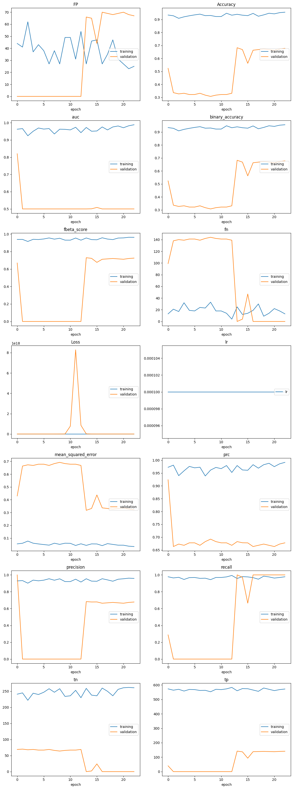

GPU#
import tensorflow as tf
import os
os.environ['TF_CPP_MIN_LOG_LEVEL'] = '2'
print("Tensorflow version: ", tf.version.VERSION)
---------------------------------------------------------------------------
ModuleNotFoundError Traceback (most recent call last)
Cell In[1], line 1
----> 1 import tensorflow as tf
2 import os
4 os.environ['TF_CPP_MIN_LOG_LEVEL'] = '2'
ModuleNotFoundError: No module named 'tensorflow'
# GPU Memory
gpus = tf.config.list_physical_devices('GPU')
if gpus:
# Restrict Tensorflow to only use the first GPU
try:
for gpu in gpus:
tf.config.experimental.set_memory_growth(gpu, True)
logical_gpus = tf.config.list_logical_devices('GPU')
print(len(gpus), "Physical GPUs", len(logical_gpus), "Logical GPU")
except RuntimeError as e:
# Visible devices must be set before GPUs have been initialized
print(e)
1 Physical GPUs 1 Logical GPU
2023-09-11 15:58:19.182781: I tensorflow/core/common_runtime/gpu/gpu_device.cc:1639] Created device /job:localhost/replica:0/task:0/device:GPU:0 with 7941 MB memory: -> device: 0, name: NVIDIA GeForce RTX 3080, pci bus id: 0000:1a:00.0, compute capability: 8.6
DEFINE VARIABLES#
# Model
NAME = "Model19"
PRETRAINED_MODEL = "NASNetLarge"
START_FREEZE = 0
END_FREEZE = 230 #275 #225 #701 #774 #598 #287
DENSE1 = 32
DENSE2 = 16
WEIGHT = "Model19_Mixed/32+16/ADAGRAD/Backup/Model19.E160.hdf5"#None
INITIAL_LEARNING_RATE = 1e-4
OPTIMIZER = "LION"
THRESHOLD = 0.5
THRESHOLDS = [0.8, 0.85, 0.9]
# Image processing
BATCH_SIZE = 16
SIZE = 240
SOURCE_DIR = 'Mixed'
# VILIDATION_DIR = 'Mixed_new'
VALIDATION_SPLIT = 0.25
HORIZONTAL_FLIP = True
VERTICAL_FLIP = True
ROTATION_RANGE = 180
BRIGHTNESS_RANGE = None #0.5, 0.9
ZOOM_RANGE = 0.0 #0.1, 0.5
WIDTH_SHIFT_RANGE = None #0.1
HEIGHT_SHIFT_RANGE = None #0.1
SHEAR_RANGE = None #0.1
CHANNEL_SHIFT_RANGE = 0.0 #150.0
COLOR_MODE = "rgb"
# Checkpoints
MONITOR = "val_loss"
EARLY_STOPPING_MODE = 'min'
EARLY_STOPPING_PATIENCE = 500
REDUCE_LR_FACTOR = 0.9
REDUCE_LR_PATIENCE = 50
SAVE_BEST_ONLY = True
SAVE_WEIGHT_ONLY = False
# Train Model
EPOCHS = 5000
MODEL CLASS#
from tensorflow.keras import layers, Model, Input
import random
from keras.initializers import he_uniform
from tensorflow.keras.metrics import Recall, Precision
import efficientnet.keras as efn
from tensorflow.keras import backend as K
class MyModel():
"""
Create model from pretrained model:
1. InceptionResNetV2,
2. VGG19,
3. VGG16,
4. EfficientNetB1,
5. InceptionV3 and
6. Xception.
7. EfficientNetV2B1
8. NASNetLarge
"""
def __init__(self, name):
self.name = name
# Base Model
def base_model(self, size, color_mode, pretrained_model, start_freeze, end_freeze):
# Check for erroneous input
if not (isinstance(start_freeze, (int, float)) \
or isinstance(end_freeze, (int, float)) \
or isinstance(size, (int, float)) \
):
raise TypeError('Inputs must be numbers.')
if color_mode == "rgb":
depth = 3
pretrained_weights = 'imagenet'
elif color_mode == "grayscale":
depth = 1
pretrained_weights = None
if pretrained_model == "InceptionResNetV2":
my_base_model = tf.keras.applications.InceptionResNetV2(
include_top=False,
weights=pretrained_weights,
input_shape=(size, size, depth),
)
elif pretrained_model == "Xception":
my_base_model = tf.keras.applications.Xception(
include_top=False,
weights=pretrained_weights,
input_shape=(size, size, depth),
)
elif pretrained_model == "VGG19":
my_base_model = tf.keras.applications.VGG19(
include_top=False,
weights=pretrained_weights,
input_shape=(size, size, depth),
)
elif pretrained_model == "VGG16":
my_base_model = tf.keras.applications.VGG16(
include_top=False,
weights=pretrained_weights,
input_shape=(size, size, depth),
)
elif pretrained_model == "InceptionV3":
my_base_model = tf.keras.applications.InceptionV3(
include_top=False,
weights=pretrained_weights,
input_shape=(size, size, depth),
)
elif pretrained_model == "EfficientNetB1":
my_base_model = efn.EfficientNetB1(
include_top=False,
weights=pretrained_weights,
input_shape=(size, size, depth),
)
elif pretrained_model == "EfficientNetV2B1":
my_base_model = tf.keras.applications.EfficientNetV2B1(
include_top=False,
weights=pretrained_weights,
input_shape=(size, size, depth),
)
elif pretrained_model == "NASNetLarge":
my_base_model = tf.keras.applications.NASNetLarge(
include_top=False,
weights=pretrained_weights,
input_shape=(size, size, depth),
)
for layer in my_base_model.layers[start_freeze:end_freeze]:
layer.trainable = False
return my_base_model
# Optimizer
def custom_optimizer(self, optimizer, lr):
'''
Define custom optimizer
'''
if optimizer == "ADAM":
optimizer = tf.keras.optimizers.Adam(
learning_rate=lr,
beta_1=0.9,
beta_2=0.999,
epsilon=1e-07,
amsgrad=False,
weight_decay=None,
clipnorm=None,
clipvalue=None,
global_clipnorm=None,
use_ema=False,
ema_momentum=0.99,
ema_overwrite_frequency=None,
jit_compile=True,
name='Adam',
)
# elif optimizer == "SGD":
# optimizer = tf.keras.optimizers.SGD(
# learning_rate=lr, # default e-2
# momentum=0.9,
# nesterov=True,
# # amsgrad=False,
# # decay=1e-6,
# # clipnorm=None,
# # clipvalue=None,
# # global_clipnorm=None,
# # use_ema=False,
# # ema_momentum=0.99,
# # ema_overwrite_frequency=None,
# # jit_compile=True,
# name="SGD",
# )
# elif optimizer == "RMSPROP":
# optimizer = tf.keras.optimizers.RMSprop(
# learning_rate=lr,
# rho=0.9,
# momentum=0.9,
# epsilon=1e-07,
# centered=False,
# decay=1e-6,
# # clipnorm=None,
# # clipvalue=None,
# # global_clipnorm=None,
# # use_ema=False,
# # ema_momentum=0.99,
# # ema_overwrite_frequency=100,
# # jit_compile=True,
# name="RMSprop",
# )
elif optimizer == "ADAMW":
optimizer = tf.keras.optimizers.AdamW(
learning_rate=lr,
weight_decay=0.004,
beta_1=0.9,
beta_2=0.999,
epsilon=1e-07,
amsgrad=False,
clipnorm=None,
clipvalue=None,
global_clipnorm=None,
use_ema=False,
ema_momentum=0.99,
ema_overwrite_frequency=None,
jit_compile=True,
name='AdamW',
)
elif optimizer == "ADAFACTOR":
optimizer = tf.keras.optimizers.Adafactor(
learning_rate=lr,
beta_2_decay=-0.8,
epsilon_1=1e-30,
epsilon_2=0.001,
clip_threshold=1.0,
relative_step=True,
weight_decay=None,
clipnorm=None,
clipvalue=None,
global_clipnorm=None,
use_ema=False,
ema_momentum=0.99,
ema_overwrite_frequency=None,
jit_compile=True,
name='Adafactor',
)
elif optimizer == "LION":
optimizer = tf.keras.optimizers.Lion(
learning_rate=lr, #0.0001
beta_1=0.9,
beta_2=0.99,
weight_decay=None,
clipnorm=None,
clipvalue=None,
global_clipnorm=None,
use_ema=False,
ema_momentum=0.99,
ema_overwrite_frequency=None,
jit_compile=True,
name='Lion',
)
elif optimizer == "ADADELTA":
optimizer = tf.keras.optimizers.experimental.Adadelta(
learning_rate=lr,
rho=0.95,
epsilon=1e-07,
weight_decay=None,
clipnorm=None,
clipvalue=None,
global_clipnorm=None,
use_ema=False,
ema_momentum=0.99,
ema_overwrite_frequency=None,
jit_compile=True,
name='Adadelta',
)
elif optimizer == "NADAM":
optimizer = tf.keras.optimizers.experimental.Nadam(
learning_rate=lr,
beta_1=0.9,
beta_2=0.999,
epsilon=1e-07,
weight_decay=None,
clipnorm=None,
clipvalue=None,
global_clipnorm=None,
use_ema=False,
ema_momentum=0.99,
ema_overwrite_frequency=None,
jit_compile=True,
name='Nadam',
)
elif optimizer == "ADAMAX":
optimizer = tf.keras.optimizers.experimental.Adamax(
learning_rate=lr,
beta_1=0.9,
beta_2=0.999,
epsilon=1e-07,
weight_decay=None,
clipnorm=None,
clipvalue=None,
global_clipnorm=None,
use_ema=False,
ema_momentum=0.99,
ema_overwrite_frequency=None,
jit_compile=True,
name='Adamax',
)
elif optimizer == "ADAGRAD":
optimizer = tf.keras.optimizers.experimental.Adagrad(
learning_rate=lr,
initial_accumulator_value=0.1,
epsilon=1e-07,
weight_decay=None,
clipnorm=None,
clipvalue=None,
global_clipnorm=None,
use_ema=False,
ema_momentum=0.99,
ema_overwrite_frequency=None,
jit_compile=True,
name='Adagrad',
)
elif optimizer == "FTRL":
optimizer = tf.keras.optimizers.experimental.Ftrl(
learning_rate=lr,
learning_rate_power=-0.5,
initial_accumulator_value=0.1,
l1_regularization_strength=0.0,
l2_regularization_strength=0.0,
l2_shrinkage_regularization_strength=0.0,
beta=0.0,
weight_decay=None,
clipnorm=None,
clipvalue=None,
global_clipnorm=None,
use_ema=False,
ema_momentum=0.99,
ema_overwrite_frequency=None,
jit_compile=True,
name='Ftrl',
)
elif optimizer == "RMSPROP":
optimizer = tf.keras.optimizers.experimental.RMSprop(
learning_rate=lr,
rho=0.9,
momentum=0.0,
epsilon=1e-07,
centered=False,
weight_decay=None,
clipnorm=None,
clipvalue=None,
global_clipnorm=None,
use_ema=False,
ema_momentum=0.99,
ema_overwrite_frequency=100,
jit_compile=True,
name='RMSprop',
)
elif optimizer == "SGD":
optimizer = tf.keras.optimizers.experimental.SGD(
learning_rate=lr, #0.01
momentum=0.0,
nesterov=False,
weight_decay=None,
clipnorm=None,
clipvalue=None,
global_clipnorm=None,
use_ema=False,
ema_momentum=0.99,
ema_overwrite_frequency=None,
jit_compile=True,
name='SGD',
)
return optimizer
# Custom Metrics
def custom_metrics(self):
'''
Define custom metrics
'''
custom_metrics = [
'acc',
'mean_squared_error',
tf.keras.metrics.TruePositives(
name='tp',
thresholds=THRESHOLD,
),
tf.keras.metrics.TrueNegatives(
name='tn',
thresholds=THRESHOLD,
),
tf.keras.metrics.FalseNegatives(
name='fn',
thresholds=THRESHOLD,
),
tf.keras.metrics.FalsePositives(
name='FP',
thresholds=THRESHOLD,
),
tf.keras.metrics.Precision(
name='precision',
thresholds=THRESHOLD,
),
tf.keras.metrics.Recall(
name='recall',
thresholds=THRESHOLD,
),
tf.keras.metrics.AUC(
num_thresholds=200,
curve='ROC',
summation_method='interpolation',
name='auc',
dtype=None,
thresholds=None,
multi_label=False,
num_labels=None,
label_weights=None,
from_logits=False
),
tf.keras.metrics.AUC(
name='prc',
curve='PR',
# thresholds=THRESHOLDS,
), # precision-recall curve
tf.keras.metrics.BinaryAccuracy(
name="binary_accuracy",
threshold=THRESHOLD,
),
tf.keras.metrics.FBetaScore(
average="weighted",
beta=0.5,
threshold=THRESHOLD,
name='fbeta_score',
dtype=None
),
]
return custom_metrics
# Create Model
def create_model(self, base_model, dense1, dense2, weight):
'''
Create model
'''
# Check for erroneous input
if not (isinstance(dense1, (int, float)) \
or isinstance(dense2, (int, float)) \
or isinstance(dropout_rate, (int, float))
):
raise TypeError('Inputs must be numbers.')
# Variables
seed = random.randint(1, 1000)
leaky_relu = tf.keras.layers.LeakyReLU(alpha=0.2) # defaults to alpha=0.3
# inputs
input_model = base_model
x = input_model.output
# top layer
x = layers.GlobalAveragePooling2D()(x)
if dense1 and dense1 > 0:
x = layers.BatchNormalization()(x)
x = layers.Activation("swish")(x) #swish
x = layers.Dense(dense1,
kernel_initializer=he_uniform(seed),
use_bias=False)(x)
if dense2 and dense2 > 0:
x = layers.BatchNormalization()(x)
x = layers.Activation("swish")(x)
x = layers.Dense(dense2,
kernel_initializer=he_uniform(seed),
use_bias=False)(x)
x = layers.BatchNormalization()(x)
x = layers.Activation("swish")(x)
# Outputs
outputs = layers.Dense(1, activation="sigmoid", name="pred")(x)
# Uncompiled Model
created_model = tf.keras.Model(inputs=input_model.input,
outputs=outputs,
name=self.name)
# Load weights
if weight is not None:
created_model.load_weights(weight)
return created_model
# Compile Model
def compile_model(self, uncompiled_model, optimizer, lr):
'''
Compile model
'''
uncompiled_model.compile(
optimizer=self.custom_optimizer(optimizer, lr),
loss='binary_crossentropy',
metrics=self.custom_metrics(),
)
compiled_model = uncompiled_model
# Display trainable layers
for i, layer in enumerate(compiled_model.layers):
print(i, layer.name, "- trainable =", layer.trainable)
return compiled_model
DEFINE MODEL#
mymodel = MyModel(
name = NAME,
)
my_base_model = mymodel.base_model(
size = SIZE,
color_mode = COLOR_MODE,
pretrained_model = PRETRAINED_MODEL,
start_freeze = START_FREEZE,
end_freeze = END_FREEZE,
)
my_created_model = mymodel.create_model(
base_model = my_base_model,
dense1 = DENSE1,
dense2 = DENSE2,
weight = WEIGHT,
)
model = mymodel.compile_model(
uncompiled_model=my_created_model,
optimizer=OPTIMIZER,
lr=INITIAL_LEARNING_RATE
)
0 input_1 - trainable = False
1 stem_conv1 - trainable = False
2 stem_bn1 - trainable = False
3 activation - trainable = False
4 reduction_conv_1_stem_1 - trainable = False
5 reduction_bn_1_stem_1 - trainable = False
6 activation_1 - trainable = False
7 activation_3 - trainable = False
8 separable_conv_1_pad_reduction_left1_stem_1 - trainable = False
9 separable_conv_1_pad_reduction_right1_stem_1 - trainable = False
10 separable_conv_1_reduction_left1_stem_1 - trainable = False
11 separable_conv_1_reduction_right1_stem_1 - trainable = False
12 separable_conv_1_bn_reduction_left1_stem_1 - trainable = False
13 separable_conv_1_bn_reduction_right1_stem_1 - trainable = False
14 activation_2 - trainable = False
15 activation_4 - trainable = False
16 separable_conv_2_reduction_left1_stem_1 - trainable = False
17 separable_conv_2_reduction_right1_stem_1 - trainable = False
18 activation_5 - trainable = False
19 separable_conv_2_bn_reduction_left1_stem_1 - trainable = False
20 separable_conv_2_bn_reduction_right1_stem_1 - trainable = False
21 separable_conv_1_pad_reduction_right2_stem_1 - trainable = False
22 activation_7 - trainable = False
23 reduction_add_1_stem_1 - trainable = False
24 separable_conv_1_reduction_right2_stem_1 - trainable = False
25 separable_conv_1_pad_reduction_right3_stem_1 - trainable = False
26 activation_9 - trainable = False
27 separable_conv_1_bn_reduction_right2_stem_1 - trainable = False
28 separable_conv_1_reduction_right3_stem_1 - trainable = False
29 separable_conv_1_reduction_left4_stem_1 - trainable = False
30 activation_6 - trainable = False
31 separable_conv_1_bn_reduction_right3_stem_1 - trainable = False
32 separable_conv_1_bn_reduction_left4_stem_1 - trainable = False
33 reduction_pad_1_stem_1 - trainable = False
34 separable_conv_2_reduction_right2_stem_1 - trainable = False
35 activation_8 - trainable = False
36 activation_10 - trainable = False
37 reduction_left2_stem_1 - trainable = False
38 separable_conv_2_bn_reduction_right2_stem_1 - trainable = False
39 separable_conv_2_reduction_right3_stem_1 - trainable = False
40 separable_conv_2_reduction_left4_stem_1 - trainable = False
41 adjust_relu_1_stem_2 - trainable = False
42 reduction_add_2_stem_1 - trainable = False
43 reduction_left3_stem_1 - trainable = False
44 separable_conv_2_bn_reduction_right3_stem_1 - trainable = False
45 reduction_left4_stem_1 - trainable = False
46 separable_conv_2_bn_reduction_left4_stem_1 - trainable = False
47 reduction_right5_stem_1 - trainable = False
48 zero_padding2d - trainable = False
49 reduction_add3_stem_1 - trainable = False
50 add - trainable = False
51 reduction_add4_stem_1 - trainable = False
52 cropping2d - trainable = False
53 reduction_concat_stem_1 - trainable = False
54 adjust_avg_pool_1_stem_2 - trainable = False
55 adjust_avg_pool_2_stem_2 - trainable = False
56 activation_11 - trainable = False
57 adjust_conv_1_stem_2 - trainable = False
58 adjust_conv_2_stem_2 - trainable = False
59 reduction_conv_1_stem_2 - trainable = False
60 concatenate - trainable = False
61 reduction_bn_1_stem_2 - trainable = False
62 adjust_bn_stem_2 - trainable = False
63 activation_12 - trainable = False
64 activation_14 - trainable = False
65 separable_conv_1_pad_reduction_left1_stem_2 - trainable = False
66 separable_conv_1_pad_reduction_right1_stem_2 - trainable = False
67 separable_conv_1_reduction_left1_stem_2 - trainable = False
68 separable_conv_1_reduction_right1_stem_2 - trainable = False
69 separable_conv_1_bn_reduction_left1_stem_2 - trainable = False
70 separable_conv_1_bn_reduction_right1_stem_2 - trainable = False
71 activation_13 - trainable = False
72 activation_15 - trainable = False
73 separable_conv_2_reduction_left1_stem_2 - trainable = False
74 separable_conv_2_reduction_right1_stem_2 - trainable = False
75 activation_16 - trainable = False
76 separable_conv_2_bn_reduction_left1_stem_2 - trainable = False
77 separable_conv_2_bn_reduction_right1_stem_2 - trainable = False
78 separable_conv_1_pad_reduction_right2_stem_2 - trainable = False
79 activation_18 - trainable = False
80 reduction_add_1_stem_2 - trainable = False
81 separable_conv_1_reduction_right2_stem_2 - trainable = False
82 separable_conv_1_pad_reduction_right3_stem_2 - trainable = False
83 activation_20 - trainable = False
84 separable_conv_1_bn_reduction_right2_stem_2 - trainable = False
85 separable_conv_1_reduction_right3_stem_2 - trainable = False
86 separable_conv_1_reduction_left4_stem_2 - trainable = False
87 activation_17 - trainable = False
88 separable_conv_1_bn_reduction_right3_stem_2 - trainable = False
89 separable_conv_1_bn_reduction_left4_stem_2 - trainable = False
90 reduction_pad_1_stem_2 - trainable = False
91 separable_conv_2_reduction_right2_stem_2 - trainable = False
92 activation_19 - trainable = False
93 activation_21 - trainable = False
94 reduction_left2_stem_2 - trainable = False
95 separable_conv_2_bn_reduction_right2_stem_2 - trainable = False
96 separable_conv_2_reduction_right3_stem_2 - trainable = False
97 separable_conv_2_reduction_left4_stem_2 - trainable = False
98 adjust_relu_1_0 - trainable = False
99 reduction_add_2_stem_2 - trainable = False
100 reduction_left3_stem_2 - trainable = False
101 separable_conv_2_bn_reduction_right3_stem_2 - trainable = False
102 reduction_left4_stem_2 - trainable = False
103 separable_conv_2_bn_reduction_left4_stem_2 - trainable = False
104 reduction_right5_stem_2 - trainable = False
105 zero_padding2d_1 - trainable = False
106 reduction_add3_stem_2 - trainable = False
107 add_1 - trainable = False
108 reduction_add4_stem_2 - trainable = False
109 cropping2d_1 - trainable = False
110 reduction_concat_stem_2 - trainable = False
111 adjust_avg_pool_1_0 - trainable = False
112 adjust_avg_pool_2_0 - trainable = False
113 adjust_conv_1_0 - trainable = False
114 adjust_conv_2_0 - trainable = False
115 activation_22 - trainable = False
116 concatenate_1 - trainable = False
117 normal_conv_1_0 - trainable = False
118 adjust_bn_0 - trainable = False
119 normal_bn_1_0 - trainable = False
120 activation_23 - trainable = False
121 activation_25 - trainable = False
122 activation_27 - trainable = False
123 activation_29 - trainable = False
124 activation_31 - trainable = False
125 separable_conv_1_normal_left1_0 - trainable = False
126 separable_conv_1_normal_right1_0 - trainable = False
127 separable_conv_1_normal_left2_0 - trainable = False
128 separable_conv_1_normal_right2_0 - trainable = False
129 separable_conv_1_normal_left5_0 - trainable = False
130 separable_conv_1_bn_normal_left1_0 - trainable = False
131 separable_conv_1_bn_normal_right1_0 - trainable = False
132 separable_conv_1_bn_normal_left2_0 - trainable = False
133 separable_conv_1_bn_normal_right2_0 - trainable = False
134 separable_conv_1_bn_normal_left5_0 - trainable = False
135 activation_24 - trainable = False
136 activation_26 - trainable = False
137 activation_28 - trainable = False
138 activation_30 - trainable = False
139 activation_32 - trainable = False
140 separable_conv_2_normal_left1_0 - trainable = False
141 separable_conv_2_normal_right1_0 - trainable = False
142 separable_conv_2_normal_left2_0 - trainable = False
143 separable_conv_2_normal_right2_0 - trainable = False
144 separable_conv_2_normal_left5_0 - trainable = False
145 separable_conv_2_bn_normal_left1_0 - trainable = False
146 separable_conv_2_bn_normal_right1_0 - trainable = False
147 separable_conv_2_bn_normal_left2_0 - trainable = False
148 separable_conv_2_bn_normal_right2_0 - trainable = False
149 normal_left3_0 - trainable = False
150 normal_left4_0 - trainable = False
151 normal_right4_0 - trainable = False
152 separable_conv_2_bn_normal_left5_0 - trainable = False
153 normal_add_1_0 - trainable = False
154 normal_add_2_0 - trainable = False
155 normal_add_3_0 - trainable = False
156 normal_add_4_0 - trainable = False
157 normal_add_5_0 - trainable = False
158 normal_concat_0 - trainable = False
159 activation_33 - trainable = False
160 activation_34 - trainable = False
161 adjust_conv_projection_1 - trainable = False
162 normal_conv_1_1 - trainable = False
163 adjust_bn_1 - trainable = False
164 normal_bn_1_1 - trainable = False
165 activation_35 - trainable = False
166 activation_37 - trainable = False
167 activation_39 - trainable = False
168 activation_41 - trainable = False
169 activation_43 - trainable = False
170 separable_conv_1_normal_left1_1 - trainable = False
171 separable_conv_1_normal_right1_1 - trainable = False
172 separable_conv_1_normal_left2_1 - trainable = False
173 separable_conv_1_normal_right2_1 - trainable = False
174 separable_conv_1_normal_left5_1 - trainable = False
175 separable_conv_1_bn_normal_left1_1 - trainable = False
176 separable_conv_1_bn_normal_right1_1 - trainable = False
177 separable_conv_1_bn_normal_left2_1 - trainable = False
178 separable_conv_1_bn_normal_right2_1 - trainable = False
179 separable_conv_1_bn_normal_left5_1 - trainable = False
180 activation_36 - trainable = False
181 activation_38 - trainable = False
182 activation_40 - trainable = False
183 activation_42 - trainable = False
184 activation_44 - trainable = False
185 separable_conv_2_normal_left1_1 - trainable = False
186 separable_conv_2_normal_right1_1 - trainable = False
187 separable_conv_2_normal_left2_1 - trainable = False
188 separable_conv_2_normal_right2_1 - trainable = False
189 separable_conv_2_normal_left5_1 - trainable = False
190 separable_conv_2_bn_normal_left1_1 - trainable = False
191 separable_conv_2_bn_normal_right1_1 - trainable = False
192 separable_conv_2_bn_normal_left2_1 - trainable = False
193 separable_conv_2_bn_normal_right2_1 - trainable = False
194 normal_left3_1 - trainable = False
195 normal_left4_1 - trainable = False
196 normal_right4_1 - trainable = False
197 separable_conv_2_bn_normal_left5_1 - trainable = False
198 normal_add_1_1 - trainable = False
199 normal_add_2_1 - trainable = False
200 normal_add_3_1 - trainable = False
201 normal_add_4_1 - trainable = False
202 normal_add_5_1 - trainable = False
203 normal_concat_1 - trainable = False
204 activation_45 - trainable = False
205 activation_46 - trainable = False
206 adjust_conv_projection_2 - trainable = False
207 normal_conv_1_2 - trainable = False
208 adjust_bn_2 - trainable = False
209 normal_bn_1_2 - trainable = False
210 activation_47 - trainable = False
211 activation_49 - trainable = False
212 activation_51 - trainable = False
213 activation_53 - trainable = False
214 activation_55 - trainable = False
215 separable_conv_1_normal_left1_2 - trainable = False
216 separable_conv_1_normal_right1_2 - trainable = False
217 separable_conv_1_normal_left2_2 - trainable = False
218 separable_conv_1_normal_right2_2 - trainable = False
219 separable_conv_1_normal_left5_2 - trainable = False
220 separable_conv_1_bn_normal_left1_2 - trainable = False
221 separable_conv_1_bn_normal_right1_2 - trainable = False
222 separable_conv_1_bn_normal_left2_2 - trainable = False
223 separable_conv_1_bn_normal_right2_2 - trainable = False
224 separable_conv_1_bn_normal_left5_2 - trainable = False
225 activation_48 - trainable = False
226 activation_50 - trainable = False
227 activation_52 - trainable = False
228 activation_54 - trainable = False
229 activation_56 - trainable = False
230 separable_conv_2_normal_left1_2 - trainable = True
231 separable_conv_2_normal_right1_2 - trainable = True
232 separable_conv_2_normal_left2_2 - trainable = True
233 separable_conv_2_normal_right2_2 - trainable = True
234 separable_conv_2_normal_left5_2 - trainable = True
235 separable_conv_2_bn_normal_left1_2 - trainable = True
236 separable_conv_2_bn_normal_right1_2 - trainable = True
237 separable_conv_2_bn_normal_left2_2 - trainable = True
238 separable_conv_2_bn_normal_right2_2 - trainable = True
239 normal_left3_2 - trainable = True
240 normal_left4_2 - trainable = True
241 normal_right4_2 - trainable = True
242 separable_conv_2_bn_normal_left5_2 - trainable = True
243 normal_add_1_2 - trainable = True
244 normal_add_2_2 - trainable = True
245 normal_add_3_2 - trainable = True
246 normal_add_4_2 - trainable = True
247 normal_add_5_2 - trainable = True
248 normal_concat_2 - trainable = True
249 activation_57 - trainable = True
250 activation_58 - trainable = True
251 adjust_conv_projection_3 - trainable = True
252 normal_conv_1_3 - trainable = True
253 adjust_bn_3 - trainable = True
254 normal_bn_1_3 - trainable = True
255 activation_59 - trainable = True
256 activation_61 - trainable = True
257 activation_63 - trainable = True
258 activation_65 - trainable = True
259 activation_67 - trainable = True
260 separable_conv_1_normal_left1_3 - trainable = True
261 separable_conv_1_normal_right1_3 - trainable = True
262 separable_conv_1_normal_left2_3 - trainable = True
263 separable_conv_1_normal_right2_3 - trainable = True
264 separable_conv_1_normal_left5_3 - trainable = True
265 separable_conv_1_bn_normal_left1_3 - trainable = True
266 separable_conv_1_bn_normal_right1_3 - trainable = True
267 separable_conv_1_bn_normal_left2_3 - trainable = True
268 separable_conv_1_bn_normal_right2_3 - trainable = True
269 separable_conv_1_bn_normal_left5_3 - trainable = True
270 activation_60 - trainable = True
271 activation_62 - trainable = True
272 activation_64 - trainable = True
273 activation_66 - trainable = True
274 activation_68 - trainable = True
275 separable_conv_2_normal_left1_3 - trainable = True
276 separable_conv_2_normal_right1_3 - trainable = True
277 separable_conv_2_normal_left2_3 - trainable = True
278 separable_conv_2_normal_right2_3 - trainable = True
279 separable_conv_2_normal_left5_3 - trainable = True
280 separable_conv_2_bn_normal_left1_3 - trainable = True
281 separable_conv_2_bn_normal_right1_3 - trainable = True
282 separable_conv_2_bn_normal_left2_3 - trainable = True
283 separable_conv_2_bn_normal_right2_3 - trainable = True
284 normal_left3_3 - trainable = True
285 normal_left4_3 - trainable = True
286 normal_right4_3 - trainable = True
287 separable_conv_2_bn_normal_left5_3 - trainable = True
288 normal_add_1_3 - trainable = True
289 normal_add_2_3 - trainable = True
290 normal_add_3_3 - trainable = True
291 normal_add_4_3 - trainable = True
292 normal_add_5_3 - trainable = True
293 normal_concat_3 - trainable = True
294 activation_69 - trainable = True
295 activation_70 - trainable = True
296 adjust_conv_projection_4 - trainable = True
297 normal_conv_1_4 - trainable = True
298 adjust_bn_4 - trainable = True
299 normal_bn_1_4 - trainable = True
300 activation_71 - trainable = True
301 activation_73 - trainable = True
302 activation_75 - trainable = True
303 activation_77 - trainable = True
304 activation_79 - trainable = True
305 separable_conv_1_normal_left1_4 - trainable = True
306 separable_conv_1_normal_right1_4 - trainable = True
307 separable_conv_1_normal_left2_4 - trainable = True
308 separable_conv_1_normal_right2_4 - trainable = True
309 separable_conv_1_normal_left5_4 - trainable = True
310 separable_conv_1_bn_normal_left1_4 - trainable = True
311 separable_conv_1_bn_normal_right1_4 - trainable = True
312 separable_conv_1_bn_normal_left2_4 - trainable = True
313 separable_conv_1_bn_normal_right2_4 - trainable = True
314 separable_conv_1_bn_normal_left5_4 - trainable = True
315 activation_72 - trainable = True
316 activation_74 - trainable = True
317 activation_76 - trainable = True
318 activation_78 - trainable = True
319 activation_80 - trainable = True
320 separable_conv_2_normal_left1_4 - trainable = True
321 separable_conv_2_normal_right1_4 - trainable = True
322 separable_conv_2_normal_left2_4 - trainable = True
323 separable_conv_2_normal_right2_4 - trainable = True
324 separable_conv_2_normal_left5_4 - trainable = True
325 separable_conv_2_bn_normal_left1_4 - trainable = True
326 separable_conv_2_bn_normal_right1_4 - trainable = True
327 separable_conv_2_bn_normal_left2_4 - trainable = True
328 separable_conv_2_bn_normal_right2_4 - trainable = True
329 normal_left3_4 - trainable = True
330 normal_left4_4 - trainable = True
331 normal_right4_4 - trainable = True
332 separable_conv_2_bn_normal_left5_4 - trainable = True
333 normal_add_1_4 - trainable = True
334 normal_add_2_4 - trainable = True
335 normal_add_3_4 - trainable = True
336 normal_add_4_4 - trainable = True
337 normal_add_5_4 - trainable = True
338 normal_concat_4 - trainable = True
339 activation_81 - trainable = True
340 activation_82 - trainable = True
341 adjust_conv_projection_5 - trainable = True
342 normal_conv_1_5 - trainable = True
343 adjust_bn_5 - trainable = True
344 normal_bn_1_5 - trainable = True
345 activation_83 - trainable = True
346 activation_85 - trainable = True
347 activation_87 - trainable = True
348 activation_89 - trainable = True
349 activation_91 - trainable = True
350 separable_conv_1_normal_left1_5 - trainable = True
351 separable_conv_1_normal_right1_5 - trainable = True
352 separable_conv_1_normal_left2_5 - trainable = True
353 separable_conv_1_normal_right2_5 - trainable = True
354 separable_conv_1_normal_left5_5 - trainable = True
355 separable_conv_1_bn_normal_left1_5 - trainable = True
356 separable_conv_1_bn_normal_right1_5 - trainable = True
357 separable_conv_1_bn_normal_left2_5 - trainable = True
358 separable_conv_1_bn_normal_right2_5 - trainable = True
359 separable_conv_1_bn_normal_left5_5 - trainable = True
360 activation_84 - trainable = True
361 activation_86 - trainable = True
362 activation_88 - trainable = True
363 activation_90 - trainable = True
364 activation_92 - trainable = True
365 separable_conv_2_normal_left1_5 - trainable = True
366 separable_conv_2_normal_right1_5 - trainable = True
367 separable_conv_2_normal_left2_5 - trainable = True
368 separable_conv_2_normal_right2_5 - trainable = True
369 separable_conv_2_normal_left5_5 - trainable = True
370 separable_conv_2_bn_normal_left1_5 - trainable = True
371 separable_conv_2_bn_normal_right1_5 - trainable = True
372 separable_conv_2_bn_normal_left2_5 - trainable = True
373 separable_conv_2_bn_normal_right2_5 - trainable = True
374 normal_left3_5 - trainable = True
375 normal_left4_5 - trainable = True
376 normal_right4_5 - trainable = True
377 separable_conv_2_bn_normal_left5_5 - trainable = True
378 normal_add_1_5 - trainable = True
379 normal_add_2_5 - trainable = True
380 normal_add_3_5 - trainable = True
381 normal_add_4_5 - trainable = True
382 normal_add_5_5 - trainable = True
383 normal_concat_5 - trainable = True
384 activation_94 - trainable = True
385 activation_93 - trainable = True
386 reduction_conv_1_reduce_6 - trainable = True
387 adjust_conv_projection_reduce_6 - trainable = True
388 reduction_bn_1_reduce_6 - trainable = True
389 adjust_bn_reduce_6 - trainable = True
390 activation_95 - trainable = True
391 activation_97 - trainable = True
392 separable_conv_1_pad_reduction_left1_reduce_6 - trainable = True
393 separable_conv_1_pad_reduction_right1_reduce_6 - trainable = True
394 separable_conv_1_reduction_left1_reduce_6 - trainable = True
395 separable_conv_1_reduction_right1_reduce_6 - trainable = True
396 separable_conv_1_bn_reduction_left1_reduce_6 - trainable = True
397 separable_conv_1_bn_reduction_right1_reduce_6 - trainable = True
398 activation_96 - trainable = True
399 activation_98 - trainable = True
400 separable_conv_2_reduction_left1_reduce_6 - trainable = True
401 separable_conv_2_reduction_right1_reduce_6 - trainable = True
402 activation_99 - trainable = True
403 separable_conv_2_bn_reduction_left1_reduce_6 - trainable = True
404 separable_conv_2_bn_reduction_right1_reduce_6 - trainable = True
405 separable_conv_1_pad_reduction_right2_reduce_6 - trainable = True
406 activation_101 - trainable = True
407 reduction_add_1_reduce_6 - trainable = True
408 separable_conv_1_reduction_right2_reduce_6 - trainable = True
409 separable_conv_1_pad_reduction_right3_reduce_6 - trainable = True
410 activation_103 - trainable = True
411 separable_conv_1_bn_reduction_right2_reduce_6 - trainable = True
412 separable_conv_1_reduction_right3_reduce_6 - trainable = True
413 separable_conv_1_reduction_left4_reduce_6 - trainable = True
414 activation_100 - trainable = True
415 separable_conv_1_bn_reduction_right3_reduce_6 - trainable = True
416 separable_conv_1_bn_reduction_left4_reduce_6 - trainable = True
417 reduction_pad_1_reduce_6 - trainable = True
418 separable_conv_2_reduction_right2_reduce_6 - trainable = True
419 activation_102 - trainable = True
420 activation_104 - trainable = True
421 reduction_left2_reduce_6 - trainable = True
422 separable_conv_2_bn_reduction_right2_reduce_6 - trainable = True
423 separable_conv_2_reduction_right3_reduce_6 - trainable = True
424 separable_conv_2_reduction_left4_reduce_6 - trainable = True
425 adjust_relu_1_7 - trainable = True
426 reduction_add_2_reduce_6 - trainable = True
427 reduction_left3_reduce_6 - trainable = True
428 separable_conv_2_bn_reduction_right3_reduce_6 - trainable = True
429 reduction_left4_reduce_6 - trainable = True
430 separable_conv_2_bn_reduction_left4_reduce_6 - trainable = True
431 reduction_right5_reduce_6 - trainable = True
432 zero_padding2d_2 - trainable = True
433 reduction_add3_reduce_6 - trainable = True
434 add_2 - trainable = True
435 reduction_add4_reduce_6 - trainable = True
436 cropping2d_2 - trainable = True
437 reduction_concat_reduce_6 - trainable = True
438 adjust_avg_pool_1_7 - trainable = True
439 adjust_avg_pool_2_7 - trainable = True
440 adjust_conv_1_7 - trainable = True
441 adjust_conv_2_7 - trainable = True
442 activation_105 - trainable = True
443 concatenate_2 - trainable = True
444 normal_conv_1_7 - trainable = True
445 adjust_bn_7 - trainable = True
446 normal_bn_1_7 - trainable = True
447 activation_106 - trainable = True
448 activation_108 - trainable = True
449 activation_110 - trainable = True
450 activation_112 - trainable = True
451 activation_114 - trainable = True
452 separable_conv_1_normal_left1_7 - trainable = True
453 separable_conv_1_normal_right1_7 - trainable = True
454 separable_conv_1_normal_left2_7 - trainable = True
455 separable_conv_1_normal_right2_7 - trainable = True
456 separable_conv_1_normal_left5_7 - trainable = True
457 separable_conv_1_bn_normal_left1_7 - trainable = True
458 separable_conv_1_bn_normal_right1_7 - trainable = True
459 separable_conv_1_bn_normal_left2_7 - trainable = True
460 separable_conv_1_bn_normal_right2_7 - trainable = True
461 separable_conv_1_bn_normal_left5_7 - trainable = True
462 activation_107 - trainable = True
463 activation_109 - trainable = True
464 activation_111 - trainable = True
465 activation_113 - trainable = True
466 activation_115 - trainable = True
467 separable_conv_2_normal_left1_7 - trainable = True
468 separable_conv_2_normal_right1_7 - trainable = True
469 separable_conv_2_normal_left2_7 - trainable = True
470 separable_conv_2_normal_right2_7 - trainable = True
471 separable_conv_2_normal_left5_7 - trainable = True
472 separable_conv_2_bn_normal_left1_7 - trainable = True
473 separable_conv_2_bn_normal_right1_7 - trainable = True
474 separable_conv_2_bn_normal_left2_7 - trainable = True
475 separable_conv_2_bn_normal_right2_7 - trainable = True
476 normal_left3_7 - trainable = True
477 normal_left4_7 - trainable = True
478 normal_right4_7 - trainable = True
479 separable_conv_2_bn_normal_left5_7 - trainable = True
480 normal_add_1_7 - trainable = True
481 normal_add_2_7 - trainable = True
482 normal_add_3_7 - trainable = True
483 normal_add_4_7 - trainable = True
484 normal_add_5_7 - trainable = True
485 normal_concat_7 - trainable = True
486 activation_116 - trainable = True
487 activation_117 - trainable = True
488 adjust_conv_projection_8 - trainable = True
489 normal_conv_1_8 - trainable = True
490 adjust_bn_8 - trainable = True
491 normal_bn_1_8 - trainable = True
492 activation_118 - trainable = True
493 activation_120 - trainable = True
494 activation_122 - trainable = True
495 activation_124 - trainable = True
496 activation_126 - trainable = True
497 separable_conv_1_normal_left1_8 - trainable = True
498 separable_conv_1_normal_right1_8 - trainable = True
499 separable_conv_1_normal_left2_8 - trainable = True
500 separable_conv_1_normal_right2_8 - trainable = True
501 separable_conv_1_normal_left5_8 - trainable = True
502 separable_conv_1_bn_normal_left1_8 - trainable = True
503 separable_conv_1_bn_normal_right1_8 - trainable = True
504 separable_conv_1_bn_normal_left2_8 - trainable = True
505 separable_conv_1_bn_normal_right2_8 - trainable = True
506 separable_conv_1_bn_normal_left5_8 - trainable = True
507 activation_119 - trainable = True
508 activation_121 - trainable = True
509 activation_123 - trainable = True
510 activation_125 - trainable = True
511 activation_127 - trainable = True
512 separable_conv_2_normal_left1_8 - trainable = True
513 separable_conv_2_normal_right1_8 - trainable = True
514 separable_conv_2_normal_left2_8 - trainable = True
515 separable_conv_2_normal_right2_8 - trainable = True
516 separable_conv_2_normal_left5_8 - trainable = True
517 separable_conv_2_bn_normal_left1_8 - trainable = True
518 separable_conv_2_bn_normal_right1_8 - trainable = True
519 separable_conv_2_bn_normal_left2_8 - trainable = True
520 separable_conv_2_bn_normal_right2_8 - trainable = True
521 normal_left3_8 - trainable = True
522 normal_left4_8 - trainable = True
523 normal_right4_8 - trainable = True
524 separable_conv_2_bn_normal_left5_8 - trainable = True
525 normal_add_1_8 - trainable = True
526 normal_add_2_8 - trainable = True
527 normal_add_3_8 - trainable = True
528 normal_add_4_8 - trainable = True
529 normal_add_5_8 - trainable = True
530 normal_concat_8 - trainable = True
531 activation_128 - trainable = True
532 activation_129 - trainable = True
533 adjust_conv_projection_9 - trainable = True
534 normal_conv_1_9 - trainable = True
535 adjust_bn_9 - trainable = True
536 normal_bn_1_9 - trainable = True
537 activation_130 - trainable = True
538 activation_132 - trainable = True
539 activation_134 - trainable = True
540 activation_136 - trainable = True
541 activation_138 - trainable = True
542 separable_conv_1_normal_left1_9 - trainable = True
543 separable_conv_1_normal_right1_9 - trainable = True
544 separable_conv_1_normal_left2_9 - trainable = True
545 separable_conv_1_normal_right2_9 - trainable = True
546 separable_conv_1_normal_left5_9 - trainable = True
547 separable_conv_1_bn_normal_left1_9 - trainable = True
548 separable_conv_1_bn_normal_right1_9 - trainable = True
549 separable_conv_1_bn_normal_left2_9 - trainable = True
550 separable_conv_1_bn_normal_right2_9 - trainable = True
551 separable_conv_1_bn_normal_left5_9 - trainable = True
552 activation_131 - trainable = True
553 activation_133 - trainable = True
554 activation_135 - trainable = True
555 activation_137 - trainable = True
556 activation_139 - trainable = True
557 separable_conv_2_normal_left1_9 - trainable = True
558 separable_conv_2_normal_right1_9 - trainable = True
559 separable_conv_2_normal_left2_9 - trainable = True
560 separable_conv_2_normal_right2_9 - trainable = True
561 separable_conv_2_normal_left5_9 - trainable = True
562 separable_conv_2_bn_normal_left1_9 - trainable = True
563 separable_conv_2_bn_normal_right1_9 - trainable = True
564 separable_conv_2_bn_normal_left2_9 - trainable = True
565 separable_conv_2_bn_normal_right2_9 - trainable = True
566 normal_left3_9 - trainable = True
567 normal_left4_9 - trainable = True
568 normal_right4_9 - trainable = True
569 separable_conv_2_bn_normal_left5_9 - trainable = True
570 normal_add_1_9 - trainable = True
571 normal_add_2_9 - trainable = True
572 normal_add_3_9 - trainable = True
573 normal_add_4_9 - trainable = True
574 normal_add_5_9 - trainable = True
575 normal_concat_9 - trainable = True
576 activation_140 - trainable = True
577 activation_141 - trainable = True
578 adjust_conv_projection_10 - trainable = True
579 normal_conv_1_10 - trainable = True
580 adjust_bn_10 - trainable = True
581 normal_bn_1_10 - trainable = True
582 activation_142 - trainable = True
583 activation_144 - trainable = True
584 activation_146 - trainable = True
585 activation_148 - trainable = True
586 activation_150 - trainable = True
587 separable_conv_1_normal_left1_10 - trainable = True
588 separable_conv_1_normal_right1_10 - trainable = True
589 separable_conv_1_normal_left2_10 - trainable = True
590 separable_conv_1_normal_right2_10 - trainable = True
591 separable_conv_1_normal_left5_10 - trainable = True
592 separable_conv_1_bn_normal_left1_10 - trainable = True
593 separable_conv_1_bn_normal_right1_10 - trainable = True
594 separable_conv_1_bn_normal_left2_10 - trainable = True
595 separable_conv_1_bn_normal_right2_10 - trainable = True
596 separable_conv_1_bn_normal_left5_10 - trainable = True
597 activation_143 - trainable = True
598 activation_145 - trainable = True
599 activation_147 - trainable = True
600 activation_149 - trainable = True
601 activation_151 - trainable = True
602 separable_conv_2_normal_left1_10 - trainable = True
603 separable_conv_2_normal_right1_10 - trainable = True
604 separable_conv_2_normal_left2_10 - trainable = True
605 separable_conv_2_normal_right2_10 - trainable = True
606 separable_conv_2_normal_left5_10 - trainable = True
607 separable_conv_2_bn_normal_left1_10 - trainable = True
608 separable_conv_2_bn_normal_right1_10 - trainable = True
609 separable_conv_2_bn_normal_left2_10 - trainable = True
610 separable_conv_2_bn_normal_right2_10 - trainable = True
611 normal_left3_10 - trainable = True
612 normal_left4_10 - trainable = True
613 normal_right4_10 - trainable = True
614 separable_conv_2_bn_normal_left5_10 - trainable = True
615 normal_add_1_10 - trainable = True
616 normal_add_2_10 - trainable = True
617 normal_add_3_10 - trainable = True
618 normal_add_4_10 - trainable = True
619 normal_add_5_10 - trainable = True
620 normal_concat_10 - trainable = True
621 activation_152 - trainable = True
622 activation_153 - trainable = True
623 adjust_conv_projection_11 - trainable = True
624 normal_conv_1_11 - trainable = True
625 adjust_bn_11 - trainable = True
626 normal_bn_1_11 - trainable = True
627 activation_154 - trainable = True
628 activation_156 - trainable = True
629 activation_158 - trainable = True
630 activation_160 - trainable = True
631 activation_162 - trainable = True
632 separable_conv_1_normal_left1_11 - trainable = True
633 separable_conv_1_normal_right1_11 - trainable = True
634 separable_conv_1_normal_left2_11 - trainable = True
635 separable_conv_1_normal_right2_11 - trainable = True
636 separable_conv_1_normal_left5_11 - trainable = True
637 separable_conv_1_bn_normal_left1_11 - trainable = True
638 separable_conv_1_bn_normal_right1_11 - trainable = True
639 separable_conv_1_bn_normal_left2_11 - trainable = True
640 separable_conv_1_bn_normal_right2_11 - trainable = True
641 separable_conv_1_bn_normal_left5_11 - trainable = True
642 activation_155 - trainable = True
643 activation_157 - trainable = True
644 activation_159 - trainable = True
645 activation_161 - trainable = True
646 activation_163 - trainable = True
647 separable_conv_2_normal_left1_11 - trainable = True
648 separable_conv_2_normal_right1_11 - trainable = True
649 separable_conv_2_normal_left2_11 - trainable = True
650 separable_conv_2_normal_right2_11 - trainable = True
651 separable_conv_2_normal_left5_11 - trainable = True
652 separable_conv_2_bn_normal_left1_11 - trainable = True
653 separable_conv_2_bn_normal_right1_11 - trainable = True
654 separable_conv_2_bn_normal_left2_11 - trainable = True
655 separable_conv_2_bn_normal_right2_11 - trainable = True
656 normal_left3_11 - trainable = True
657 normal_left4_11 - trainable = True
658 normal_right4_11 - trainable = True
659 separable_conv_2_bn_normal_left5_11 - trainable = True
660 normal_add_1_11 - trainable = True
661 normal_add_2_11 - trainable = True
662 normal_add_3_11 - trainable = True
663 normal_add_4_11 - trainable = True
664 normal_add_5_11 - trainable = True
665 normal_concat_11 - trainable = True
666 activation_164 - trainable = True
667 activation_165 - trainable = True
668 adjust_conv_projection_12 - trainable = True
669 normal_conv_1_12 - trainable = True
670 adjust_bn_12 - trainable = True
671 normal_bn_1_12 - trainable = True
672 activation_166 - trainable = True
673 activation_168 - trainable = True
674 activation_170 - trainable = True
675 activation_172 - trainable = True
676 activation_174 - trainable = True
677 separable_conv_1_normal_left1_12 - trainable = True
678 separable_conv_1_normal_right1_12 - trainable = True
679 separable_conv_1_normal_left2_12 - trainable = True
680 separable_conv_1_normal_right2_12 - trainable = True
681 separable_conv_1_normal_left5_12 - trainable = True
682 separable_conv_1_bn_normal_left1_12 - trainable = True
683 separable_conv_1_bn_normal_right1_12 - trainable = True
684 separable_conv_1_bn_normal_left2_12 - trainable = True
685 separable_conv_1_bn_normal_right2_12 - trainable = True
686 separable_conv_1_bn_normal_left5_12 - trainable = True
687 activation_167 - trainable = True
688 activation_169 - trainable = True
689 activation_171 - trainable = True
690 activation_173 - trainable = True
691 activation_175 - trainable = True
692 separable_conv_2_normal_left1_12 - trainable = True
693 separable_conv_2_normal_right1_12 - trainable = True
694 separable_conv_2_normal_left2_12 - trainable = True
695 separable_conv_2_normal_right2_12 - trainable = True
696 separable_conv_2_normal_left5_12 - trainable = True
697 separable_conv_2_bn_normal_left1_12 - trainable = True
698 separable_conv_2_bn_normal_right1_12 - trainable = True
699 separable_conv_2_bn_normal_left2_12 - trainable = True
700 separable_conv_2_bn_normal_right2_12 - trainable = True
701 normal_left3_12 - trainable = True
702 normal_left4_12 - trainable = True
703 normal_right4_12 - trainable = True
704 separable_conv_2_bn_normal_left5_12 - trainable = True
705 normal_add_1_12 - trainable = True
706 normal_add_2_12 - trainable = True
707 normal_add_3_12 - trainable = True
708 normal_add_4_12 - trainable = True
709 normal_add_5_12 - trainable = True
710 normal_concat_12 - trainable = True
711 activation_177 - trainable = True
712 activation_176 - trainable = True
713 reduction_conv_1_reduce_12 - trainable = True
714 adjust_conv_projection_reduce_12 - trainable = True
715 reduction_bn_1_reduce_12 - trainable = True
716 adjust_bn_reduce_12 - trainable = True
717 activation_178 - trainable = True
718 activation_180 - trainable = True
719 separable_conv_1_pad_reduction_left1_reduce_12 - trainable = True
720 separable_conv_1_pad_reduction_right1_reduce_12 - trainable = True
721 separable_conv_1_reduction_left1_reduce_12 - trainable = True
722 separable_conv_1_reduction_right1_reduce_12 - trainable = True
723 separable_conv_1_bn_reduction_left1_reduce_12 - trainable = True
724 separable_conv_1_bn_reduction_right1_reduce_12 - trainable = True
725 activation_179 - trainable = True
726 activation_181 - trainable = True
727 separable_conv_2_reduction_left1_reduce_12 - trainable = True
728 separable_conv_2_reduction_right1_reduce_12 - trainable = True
729 activation_182 - trainable = True
730 separable_conv_2_bn_reduction_left1_reduce_12 - trainable = True
731 separable_conv_2_bn_reduction_right1_reduce_12 - trainable = True
732 separable_conv_1_pad_reduction_right2_reduce_12 - trainable = True
733 activation_184 - trainable = True
734 reduction_add_1_reduce_12 - trainable = True
735 separable_conv_1_reduction_right2_reduce_12 - trainable = True
736 separable_conv_1_pad_reduction_right3_reduce_12 - trainable = True
737 activation_186 - trainable = True
738 separable_conv_1_bn_reduction_right2_reduce_12 - trainable = True
739 separable_conv_1_reduction_right3_reduce_12 - trainable = True
740 separable_conv_1_reduction_left4_reduce_12 - trainable = True
741 activation_183 - trainable = True
742 separable_conv_1_bn_reduction_right3_reduce_12 - trainable = True
743 separable_conv_1_bn_reduction_left4_reduce_12 - trainable = True
744 reduction_pad_1_reduce_12 - trainable = True
745 separable_conv_2_reduction_right2_reduce_12 - trainable = True
746 activation_185 - trainable = True
747 activation_187 - trainable = True
748 reduction_left2_reduce_12 - trainable = True
749 separable_conv_2_bn_reduction_right2_reduce_12 - trainable = True
750 separable_conv_2_reduction_right3_reduce_12 - trainable = True
751 separable_conv_2_reduction_left4_reduce_12 - trainable = True
752 adjust_relu_1_13 - trainable = True
753 reduction_add_2_reduce_12 - trainable = True
754 reduction_left3_reduce_12 - trainable = True
755 separable_conv_2_bn_reduction_right3_reduce_12 - trainable = True
756 reduction_left4_reduce_12 - trainable = True
757 separable_conv_2_bn_reduction_left4_reduce_12 - trainable = True
758 reduction_right5_reduce_12 - trainable = True
759 zero_padding2d_3 - trainable = True
760 reduction_add3_reduce_12 - trainable = True
761 add_3 - trainable = True
762 reduction_add4_reduce_12 - trainable = True
763 cropping2d_3 - trainable = True
764 reduction_concat_reduce_12 - trainable = True
765 adjust_avg_pool_1_13 - trainable = True
766 adjust_avg_pool_2_13 - trainable = True
767 adjust_conv_1_13 - trainable = True
768 adjust_conv_2_13 - trainable = True
769 activation_188 - trainable = True
770 concatenate_3 - trainable = True
771 normal_conv_1_13 - trainable = True
772 adjust_bn_13 - trainable = True
773 normal_bn_1_13 - trainable = True
774 activation_189 - trainable = True
775 activation_191 - trainable = True
776 activation_193 - trainable = True
777 activation_195 - trainable = True
778 activation_197 - trainable = True
779 separable_conv_1_normal_left1_13 - trainable = True
780 separable_conv_1_normal_right1_13 - trainable = True
781 separable_conv_1_normal_left2_13 - trainable = True
782 separable_conv_1_normal_right2_13 - trainable = True
783 separable_conv_1_normal_left5_13 - trainable = True
784 separable_conv_1_bn_normal_left1_13 - trainable = True
785 separable_conv_1_bn_normal_right1_13 - trainable = True
786 separable_conv_1_bn_normal_left2_13 - trainable = True
787 separable_conv_1_bn_normal_right2_13 - trainable = True
788 separable_conv_1_bn_normal_left5_13 - trainable = True
789 activation_190 - trainable = True
790 activation_192 - trainable = True
791 activation_194 - trainable = True
792 activation_196 - trainable = True
793 activation_198 - trainable = True
794 separable_conv_2_normal_left1_13 - trainable = True
795 separable_conv_2_normal_right1_13 - trainable = True
796 separable_conv_2_normal_left2_13 - trainable = True
797 separable_conv_2_normal_right2_13 - trainable = True
798 separable_conv_2_normal_left5_13 - trainable = True
799 separable_conv_2_bn_normal_left1_13 - trainable = True
800 separable_conv_2_bn_normal_right1_13 - trainable = True
801 separable_conv_2_bn_normal_left2_13 - trainable = True
802 separable_conv_2_bn_normal_right2_13 - trainable = True
803 normal_left3_13 - trainable = True
804 normal_left4_13 - trainable = True
805 normal_right4_13 - trainable = True
806 separable_conv_2_bn_normal_left5_13 - trainable = True
807 normal_add_1_13 - trainable = True
808 normal_add_2_13 - trainable = True
809 normal_add_3_13 - trainable = True
810 normal_add_4_13 - trainable = True
811 normal_add_5_13 - trainable = True
812 normal_concat_13 - trainable = True
813 activation_199 - trainable = True
814 activation_200 - trainable = True
815 adjust_conv_projection_14 - trainable = True
816 normal_conv_1_14 - trainable = True
817 adjust_bn_14 - trainable = True
818 normal_bn_1_14 - trainable = True
819 activation_201 - trainable = True
820 activation_203 - trainable = True
821 activation_205 - trainable = True
822 activation_207 - trainable = True
823 activation_209 - trainable = True
824 separable_conv_1_normal_left1_14 - trainable = True
825 separable_conv_1_normal_right1_14 - trainable = True
826 separable_conv_1_normal_left2_14 - trainable = True
827 separable_conv_1_normal_right2_14 - trainable = True
828 separable_conv_1_normal_left5_14 - trainable = True
829 separable_conv_1_bn_normal_left1_14 - trainable = True
830 separable_conv_1_bn_normal_right1_14 - trainable = True
831 separable_conv_1_bn_normal_left2_14 - trainable = True
832 separable_conv_1_bn_normal_right2_14 - trainable = True
833 separable_conv_1_bn_normal_left5_14 - trainable = True
834 activation_202 - trainable = True
835 activation_204 - trainable = True
836 activation_206 - trainable = True
837 activation_208 - trainable = True
838 activation_210 - trainable = True
839 separable_conv_2_normal_left1_14 - trainable = True
840 separable_conv_2_normal_right1_14 - trainable = True
841 separable_conv_2_normal_left2_14 - trainable = True
842 separable_conv_2_normal_right2_14 - trainable = True
843 separable_conv_2_normal_left5_14 - trainable = True
844 separable_conv_2_bn_normal_left1_14 - trainable = True
845 separable_conv_2_bn_normal_right1_14 - trainable = True
846 separable_conv_2_bn_normal_left2_14 - trainable = True
847 separable_conv_2_bn_normal_right2_14 - trainable = True
848 normal_left3_14 - trainable = True
849 normal_left4_14 - trainable = True
850 normal_right4_14 - trainable = True
851 separable_conv_2_bn_normal_left5_14 - trainable = True
852 normal_add_1_14 - trainable = True
853 normal_add_2_14 - trainable = True
854 normal_add_3_14 - trainable = True
855 normal_add_4_14 - trainable = True
856 normal_add_5_14 - trainable = True
857 normal_concat_14 - trainable = True
858 activation_211 - trainable = True
859 activation_212 - trainable = True
860 adjust_conv_projection_15 - trainable = True
861 normal_conv_1_15 - trainable = True
862 adjust_bn_15 - trainable = True
863 normal_bn_1_15 - trainable = True
864 activation_213 - trainable = True
865 activation_215 - trainable = True
866 activation_217 - trainable = True
867 activation_219 - trainable = True
868 activation_221 - trainable = True
869 separable_conv_1_normal_left1_15 - trainable = True
870 separable_conv_1_normal_right1_15 - trainable = True
871 separable_conv_1_normal_left2_15 - trainable = True
872 separable_conv_1_normal_right2_15 - trainable = True
873 separable_conv_1_normal_left5_15 - trainable = True
874 separable_conv_1_bn_normal_left1_15 - trainable = True
875 separable_conv_1_bn_normal_right1_15 - trainable = True
876 separable_conv_1_bn_normal_left2_15 - trainable = True
877 separable_conv_1_bn_normal_right2_15 - trainable = True
878 separable_conv_1_bn_normal_left5_15 - trainable = True
879 activation_214 - trainable = True
880 activation_216 - trainable = True
881 activation_218 - trainable = True
882 activation_220 - trainable = True
883 activation_222 - trainable = True
884 separable_conv_2_normal_left1_15 - trainable = True
885 separable_conv_2_normal_right1_15 - trainable = True
886 separable_conv_2_normal_left2_15 - trainable = True
887 separable_conv_2_normal_right2_15 - trainable = True
888 separable_conv_2_normal_left5_15 - trainable = True
889 separable_conv_2_bn_normal_left1_15 - trainable = True
890 separable_conv_2_bn_normal_right1_15 - trainable = True
891 separable_conv_2_bn_normal_left2_15 - trainable = True
892 separable_conv_2_bn_normal_right2_15 - trainable = True
893 normal_left3_15 - trainable = True
894 normal_left4_15 - trainable = True
895 normal_right4_15 - trainable = True
896 separable_conv_2_bn_normal_left5_15 - trainable = True
897 normal_add_1_15 - trainable = True
898 normal_add_2_15 - trainable = True
899 normal_add_3_15 - trainable = True
900 normal_add_4_15 - trainable = True
901 normal_add_5_15 - trainable = True
902 normal_concat_15 - trainable = True
903 activation_223 - trainable = True
904 activation_224 - trainable = True
905 adjust_conv_projection_16 - trainable = True
906 normal_conv_1_16 - trainable = True
907 adjust_bn_16 - trainable = True
908 normal_bn_1_16 - trainable = True
909 activation_225 - trainable = True
910 activation_227 - trainable = True
911 activation_229 - trainable = True
912 activation_231 - trainable = True
913 activation_233 - trainable = True
914 separable_conv_1_normal_left1_16 - trainable = True
915 separable_conv_1_normal_right1_16 - trainable = True
916 separable_conv_1_normal_left2_16 - trainable = True
917 separable_conv_1_normal_right2_16 - trainable = True
918 separable_conv_1_normal_left5_16 - trainable = True
919 separable_conv_1_bn_normal_left1_16 - trainable = True
920 separable_conv_1_bn_normal_right1_16 - trainable = True
921 separable_conv_1_bn_normal_left2_16 - trainable = True
922 separable_conv_1_bn_normal_right2_16 - trainable = True
923 separable_conv_1_bn_normal_left5_16 - trainable = True
924 activation_226 - trainable = True
925 activation_228 - trainable = True
926 activation_230 - trainable = True
927 activation_232 - trainable = True
928 activation_234 - trainable = True
929 separable_conv_2_normal_left1_16 - trainable = True
930 separable_conv_2_normal_right1_16 - trainable = True
931 separable_conv_2_normal_left2_16 - trainable = True
932 separable_conv_2_normal_right2_16 - trainable = True
933 separable_conv_2_normal_left5_16 - trainable = True
934 separable_conv_2_bn_normal_left1_16 - trainable = True
935 separable_conv_2_bn_normal_right1_16 - trainable = True
936 separable_conv_2_bn_normal_left2_16 - trainable = True
937 separable_conv_2_bn_normal_right2_16 - trainable = True
938 normal_left3_16 - trainable = True
939 normal_left4_16 - trainable = True
940 normal_right4_16 - trainable = True
941 separable_conv_2_bn_normal_left5_16 - trainable = True
942 normal_add_1_16 - trainable = True
943 normal_add_2_16 - trainable = True
944 normal_add_3_16 - trainable = True
945 normal_add_4_16 - trainable = True
946 normal_add_5_16 - trainable = True
947 normal_concat_16 - trainable = True
948 activation_235 - trainable = True
949 activation_236 - trainable = True
950 adjust_conv_projection_17 - trainable = True
951 normal_conv_1_17 - trainable = True
952 adjust_bn_17 - trainable = True
953 normal_bn_1_17 - trainable = True
954 activation_237 - trainable = True
955 activation_239 - trainable = True
956 activation_241 - trainable = True
957 activation_243 - trainable = True
958 activation_245 - trainable = True
959 separable_conv_1_normal_left1_17 - trainable = True
960 separable_conv_1_normal_right1_17 - trainable = True
961 separable_conv_1_normal_left2_17 - trainable = True
962 separable_conv_1_normal_right2_17 - trainable = True
963 separable_conv_1_normal_left5_17 - trainable = True
964 separable_conv_1_bn_normal_left1_17 - trainable = True
965 separable_conv_1_bn_normal_right1_17 - trainable = True
966 separable_conv_1_bn_normal_left2_17 - trainable = True
967 separable_conv_1_bn_normal_right2_17 - trainable = True
968 separable_conv_1_bn_normal_left5_17 - trainable = True
969 activation_238 - trainable = True
970 activation_240 - trainable = True
971 activation_242 - trainable = True
972 activation_244 - trainable = True
973 activation_246 - trainable = True
974 separable_conv_2_normal_left1_17 - trainable = True
975 separable_conv_2_normal_right1_17 - trainable = True
976 separable_conv_2_normal_left2_17 - trainable = True
977 separable_conv_2_normal_right2_17 - trainable = True
978 separable_conv_2_normal_left5_17 - trainable = True
979 separable_conv_2_bn_normal_left1_17 - trainable = True
980 separable_conv_2_bn_normal_right1_17 - trainable = True
981 separable_conv_2_bn_normal_left2_17 - trainable = True
982 separable_conv_2_bn_normal_right2_17 - trainable = True
983 normal_left3_17 - trainable = True
984 normal_left4_17 - trainable = True
985 normal_right4_17 - trainable = True
986 separable_conv_2_bn_normal_left5_17 - trainable = True
987 normal_add_1_17 - trainable = True
988 normal_add_2_17 - trainable = True
989 normal_add_3_17 - trainable = True
990 normal_add_4_17 - trainable = True
991 normal_add_5_17 - trainable = True
992 normal_concat_17 - trainable = True
993 activation_247 - trainable = True
994 activation_248 - trainable = True
995 adjust_conv_projection_18 - trainable = True
996 normal_conv_1_18 - trainable = True
997 adjust_bn_18 - trainable = True
998 normal_bn_1_18 - trainable = True
999 activation_249 - trainable = True
1000 activation_251 - trainable = True
1001 activation_253 - trainable = True
1002 activation_255 - trainable = True
1003 activation_257 - trainable = True
1004 separable_conv_1_normal_left1_18 - trainable = True
1005 separable_conv_1_normal_right1_18 - trainable = True
1006 separable_conv_1_normal_left2_18 - trainable = True
1007 separable_conv_1_normal_right2_18 - trainable = True
1008 separable_conv_1_normal_left5_18 - trainable = True
1009 separable_conv_1_bn_normal_left1_18 - trainable = True
1010 separable_conv_1_bn_normal_right1_18 - trainable = True
1011 separable_conv_1_bn_normal_left2_18 - trainable = True
1012 separable_conv_1_bn_normal_right2_18 - trainable = True
1013 separable_conv_1_bn_normal_left5_18 - trainable = True
1014 activation_250 - trainable = True
1015 activation_252 - trainable = True
1016 activation_254 - trainable = True
1017 activation_256 - trainable = True
1018 activation_258 - trainable = True
1019 separable_conv_2_normal_left1_18 - trainable = True
1020 separable_conv_2_normal_right1_18 - trainable = True
1021 separable_conv_2_normal_left2_18 - trainable = True
1022 separable_conv_2_normal_right2_18 - trainable = True
1023 separable_conv_2_normal_left5_18 - trainable = True
1024 separable_conv_2_bn_normal_left1_18 - trainable = True
1025 separable_conv_2_bn_normal_right1_18 - trainable = True
1026 separable_conv_2_bn_normal_left2_18 - trainable = True
1027 separable_conv_2_bn_normal_right2_18 - trainable = True
1028 normal_left3_18 - trainable = True
1029 normal_left4_18 - trainable = True
1030 normal_right4_18 - trainable = True
1031 separable_conv_2_bn_normal_left5_18 - trainable = True
1032 normal_add_1_18 - trainable = True
1033 normal_add_2_18 - trainable = True
1034 normal_add_3_18 - trainable = True
1035 normal_add_4_18 - trainable = True
1036 normal_add_5_18 - trainable = True
1037 normal_concat_18 - trainable = True
1038 activation_259 - trainable = True
1039 global_average_pooling2d - trainable = True
1040 batch_normalization - trainable = True
1041 activation_260 - trainable = True
1042 dense - trainable = True
1043 batch_normalization_1 - trainable = True
1044 activation_261 - trainable = True
1045 dense_1 - trainable = True
1046 batch_normalization_2 - trainable = True
1047 activation_262 - trainable = True
1048 pred - trainable = True
PREPROCESS DATASET#
from tensorflow.keras.preprocessing.image import ImageDataGenerator
from sklearn.utils import class_weight
import numpy as np
# Experiment with your own parameters here to really try to drive it to 99.9% accuracy or better
train_image_gen = ImageDataGenerator(
# preprocessing_function=preprocess_input,
rescale=1./255,
validation_split=VALIDATION_SPLIT,
horizontal_flip=HORIZONTAL_FLIP,
vertical_flip=VERTICAL_FLIP,
rotation_range=ROTATION_RANGE,
brightness_range=BRIGHTNESS_RANGE,
zoom_range=ZOOM_RANGE,
width_shift_range=WIDTH_SHIFT_RANGE,
height_shift_range=HEIGHT_SHIFT_RANGE,
shear_range=SHEAR_RANGE,
channel_shift_range=CHANNEL_SHIFT_RANGE,
# fill_mode='nearest',
# cval=0.0,
# data_format='channels_last',
# interpolation_order=1,
# dtype=None
# featurewise_center=True,
# samplewise_center=True,
# featurewise_std_normalization=True,
# samplewise_std_normalization=True,
# zca_whitening=False,
# zca_epsilon=1e-06,
)
train_generator = train_image_gen.flow_from_directory(
SOURCE_DIR,
batch_size=BATCH_SIZE,
class_mode='binary',
target_size=(SIZE, SIZE),
shuffle=True,
# seed=42,
save_format='bmp',
# classes=None,
# save_to_dir=SAVE_TO_DIR,
# save_prefix='',
# follow_links=False,
# subset='training',
# interpolation='nearest',
# keep_aspect_ratio=False,
color_mode=COLOR_MODE,
)
val_image_gen = ImageDataGenerator(
# preprocessing_function=preprocess_input,
rescale=1./255,
validation_split=VALIDATION_SPLIT,
)
validation_generator = train_image_gen.flow_from_directory(
SOURCE_DIR,
batch_size=BATCH_SIZE,
class_mode='binary',
target_size=(SIZE, SIZE),
shuffle=True,
# seed=42,
subset='validation',
color_mode=COLOR_MODE,
)
# Define Class Weight
class_weights = class_weight.compute_class_weight(
'balanced',
classes=np.unique(train_generator.classes),
y=train_generator.classes
)
CLASS_WEIGHT = dict([(0, class_weights[1]), (1, class_weights[0])])
print("Class Weight =", CLASS_WEIGHT)
Found 887 images belonging to 2 classes.
Found 221 images belonging to 2 classes.
Class Weight = {0: 0.7428810720268006, 1: 1.5293103448275862}
CALLBACKS AND CHECKPOINTS#
from tensorflow.keras.callbacks import ModelCheckpoint, EarlyStopping
from tensorflow.keras.callbacks import ReduceLROnPlateau
from tensorflow.keras.callbacks import CSVLogger
from tensorflow.keras.callbacks import LearningRateScheduler
from livelossplot import PlotLossesKeras
import os
CHECKPOINT_DIR = NAME + "_" + SOURCE_DIR
CHECKPOINT_FORMAT = str(NAME) + "." \
"E{epoch:03d}."\
"hdf5"
DENSE = str(DENSE1) + "+" + str(DENSE2)
CHECKPOINT_PATH = os.path.join(CHECKPOINT_DIR, DENSE, OPTIMIZER, CHECKPOINT_FORMAT)
# Make Directories
try:
os.makedirs(CHECKPOINT_DIR, exist_ok = True)
print("Directory '%s' created successfully" %CHECKPOINT_DIR)
except OSError as error:
print("Directory '%s' can not be created")
# Callback LiveLossPlot
plotlosses = PlotLossesKeras()
# CSV logger
csv_log = CSVLogger("results.csv")
# Early Stopping
early_stopping = EarlyStopping(
monitor= MONITOR,
mode = EARLY_STOPPING_MODE,
verbose = 1,
patience = EARLY_STOPPING_PATIENCE,
min_delta=0,
baseline=0.01,
restore_best_weights=True,
)
## Reduce learning rate if it gets stuck in a plateau
reduced_lr = ReduceLROnPlateau(
monitor = MONITOR,
factor = REDUCE_LR_FACTOR,
patience = REDUCE_LR_PATIENCE,
min_lr = 0,
mode = 'auto',
min_delta = 0.0001,
cooldown = 0,
verbose = 1,
)
# ModelCheckpoint callback - Precision
checkpoint_precision = ModelCheckpoint(
# CHECKPOINT_PRECISION_PATH,
CHECKPOINT_PATH,
save_best_only = SAVE_BEST_ONLY,
save_weights_only = SAVE_WEIGHT_ONLY,
monitor = 'precision',
mode = 'max',
verbose = 1,
)
# ModelCheckpoint callback - Val Precision
checkpoint_val_precision = ModelCheckpoint(
# CHECKPOINT_VAL_PRECISION_PATH,
CHECKPOINT_PATH,
save_best_only = SAVE_BEST_ONLY,
save_weights_only = SAVE_WEIGHT_ONLY,
monitor = 'val_precision',
mode = 'max',
verbose = 1,
)
# ModelCheckpoint callback - Recall
checkpoint_recall = ModelCheckpoint(
# CHECKPOINT_RECALL_PATH,
CHECKPOINT_PATH,
save_best_only = SAVE_BEST_ONLY,
save_weights_only = SAVE_WEIGHT_ONLY,
monitor = 'recall',
mode = 'max',
verbose = 1,
)
# ModelCheckpoint callback - Val Recall
checkpoint_val_recall = ModelCheckpoint(
# CHECKPOINT_VAL_RECALL_PATH,
CHECKPOINT_PATH,
save_best_only = SAVE_BEST_ONLY,
save_weights_only = SAVE_WEIGHT_ONLY,
monitor = 'val_recall',
mode = 'max',
verbose = 1,
)
# ModelCheckpoint callback - AUC
checkpoint_auc = ModelCheckpoint(
# CHECKPOINT_AUC_PATH,
CHECKPOINT_PATH,
save_best_only = SAVE_BEST_ONLY,
save_weights_only = SAVE_WEIGHT_ONLY,
monitor = 'auc',
mode = 'max',
verbose = 1,
)
# ModelCheckpoint callback - VAL AUC
checkpoint_val_auc = ModelCheckpoint(
# CHECKPOINT_VAL_AUC_PATH,
CHECKPOINT_PATH,
save_best_only = SAVE_BEST_ONLY,
save_weights_only = SAVE_WEIGHT_ONLY,
monitor = 'val_auc',
mode = 'max',
verbose = 1,
)
# ModelCheckpoint callback - prc
checkpoint_prc = ModelCheckpoint(
# CHECKPOINT_PRC_PATH,
CHECKPOINT_PATH,
save_best_only = SAVE_BEST_ONLY,
save_weights_only = SAVE_WEIGHT_ONLY,
monitor = 'prc',
mode = 'max',
verbose = 1,
)
# ModelCheckpoint callback - val prc
checkpoint_val_prc = ModelCheckpoint(
# CHECKPOINT_VAL_PRC_PATH,
CHECKPOINT_PATH,
save_best_only = SAVE_BEST_ONLY,
save_weights_only = SAVE_WEIGHT_ONLY,
monitor = 'val_prc',
mode = 'max',
verbose = 1,
)
# ModelCheckpoint callback - Validation Loss
checkpoint_val_loss = ModelCheckpoint(
# CHECKPOINT_LOSS_PATH,
CHECKPOINT_PATH,
save_best_only = SAVE_BEST_ONLY,
save_weights_only = SAVE_WEIGHT_ONLY,
monitor = 'val_loss',
mode = 'min',
verbose = 1,
)
# ModelCheckpoint callback - Loss
checkpoint_loss = ModelCheckpoint(
# CHECKPOINT_VAL_LOSS_PATH,
CHECKPOINT_PATH,
save_best_only = SAVE_BEST_ONLY,
save_weights_only = SAVE_WEIGHT_ONLY,
monitor = 'loss',
mode = 'min',
verbose = 1,
)
# ModelCheckpoint callback - Accuracy
checkpoint_acc = ModelCheckpoint(
# CHECKPOINT_ACC_PATH,
CHECKPOINT_PATH,
monitor = 'acc',
mode = 'max',
save_best_only = SAVE_BEST_ONLY,
save_weights_only = SAVE_WEIGHT_ONLY,
verbose = 1,
)
# ModelCheckpoint callback - Validation Accuracy
checkpoint_val_acc = ModelCheckpoint(
# CHECKPOINT_VAL_ACC_PATH,
CHECKPOINT_PATH,
monitor = 'val_acc',
mode = 'max',
save_best_only = SAVE_BEST_ONLY,
save_weights_only = SAVE_WEIGHT_ONLY,
verbose = 1,
)
# ModelCheckpoint callback - False Positive
checkpoint_fp = ModelCheckpoint(
# CHECKPOINT_FP_PATH,
CHECKPOINT_PATH,
save_best_only = SAVE_BEST_ONLY,
save_weights_only = SAVE_WEIGHT_ONLY,
monitor = 'FP',
mode = 'min',
verbose = 1,
)
# ModelCheckpoint callback - Validation False Positive
checkpoint_val_fp = ModelCheckpoint(
# CHECKPOINT_VAL_FP_PATH,
CHECKPOINT_PATH,
save_best_only = SAVE_BEST_ONLY,
save_weights_only = SAVE_WEIGHT_ONLY,
monitor = 'val_FP',
mode = 'min',
verbose = 1,
)
# ModelCheckpoint callback - Mean Square Error
checkpoint_mse = ModelCheckpoint(
# CHECKPOINT_MSE_PATH,
CHECKPOINT_PATH,
save_best_only = SAVE_BEST_ONLY,
save_weights_only = SAVE_WEIGHT_ONLY,
monitor = 'mean_squared_error',
mode = 'min',
verbose = 1,
)
# ModelCheckpoint callback - Validation Mean Square Error
checkpoint_val_mse = ModelCheckpoint(
# CHECKPOINT_VAL_MSE_PATH,
CHECKPOINT_PATH,
save_best_only = SAVE_BEST_ONLY,
save_weights_only = SAVE_WEIGHT_ONLY,
monitor = 'val_mean_squared_error',
mode = 'min',
verbose = 1,
)
# ModelCheckpoint callback - Binary Accuracy
checkpoint_ba = ModelCheckpoint(
# CHECKPOINT_BA_PATH,
CHECKPOINT_PATH,
save_best_only = SAVE_BEST_ONLY,
save_weights_only = SAVE_WEIGHT_ONLY,
monitor = "binary_accuracy",
mode = 'max',
verbose = 1,
)
# ModelCheckpoint callback - Validation Binary Accuracy
checkpoint_val_ba = ModelCheckpoint(
# CHECKPOINT_VAL_BA_PATH,
CHECKPOINT_PATH,
save_best_only = SAVE_BEST_ONLY,
save_weights_only = SAVE_WEIGHT_ONLY,
monitor = "val_binary_accuracy",
mode = 'max',
verbose = 1,
)
# ModelCheckpoint callback - Fbeta score
checkpoint_fbeta_score = ModelCheckpoint(
# CHECKPOINT_FBETA_SCORE_PATH,
CHECKPOINT_PATH,
save_best_only = SAVE_BEST_ONLY,
save_weights_only = SAVE_WEIGHT_ONLY,
monitor = "fbeta_score",
mode = 'max',
verbose = 1,
)
# ModelCheckpoint callback - Validation Fbeta score
checkpoint_val_fbeta_score = ModelCheckpoint(
# CHECKPOINT_VAL_FBETA_SCORE_PATH,
CHECKPOINT_PATH,
save_best_only = SAVE_BEST_ONLY,
save_weights_only = SAVE_WEIGHT_ONLY,
monitor = "val_fbeta_score",
mode = 'max',
verbose = 1,
)
Directory 'Model19_Mixed' created successfully
TRAIN MODEL#
if SAVE_BEST_ONLY == True:
CALLBACKS = [
checkpoint_acc,
checkpoint_val_acc,
checkpoint_loss,
checkpoint_val_loss,
checkpoint_mse,
checkpoint_val_mse,
checkpoint_auc,
checkpoint_val_auc,
checkpoint_prc,
checkpoint_val_prc,
checkpoint_fp,
checkpoint_val_fp,
checkpoint_ba,
checkpoint_val_ba,
checkpoint_precision,
checkpoint_val_precision,
checkpoint_recall,
checkpoint_val_recall,
checkpoint_fbeta_score,
checkpoint_val_fbeta_score,
early_stopping,
reduced_lr,
plotlosses,
# csv_log,
]
else:
CALLBACKS = [
checkpoint_auc,
plotlosses,
early_stopping,
reduced_lr,
]
history = model.fit(
x=train_generator,
validation_data=validation_generator,
epochs=EPOCHS,
batch_size=BATCH_SIZE,
steps_per_epoch = train_generator.samples // BATCH_SIZE,
validation_steps = validation_generator.samples // BATCH_SIZE,
verbose=1,
callbacks=CALLBACKS,
class_weight=CLASS_WEIGHT,
)

FP
training (min: 23.000, max: 62.000, cur: 25.000)
validation (min: 0.000, max: 70.000, cur: 67.000)
Accuracy
training (min: 0.909, max: 0.956, cur: 0.956)
validation (min: 0.308, max: 0.683, cur: 0.678)
auc
training (min: 0.924, max: 0.988, cur: 0.988)
validation (min: 0.500, max: 0.820, cur: 0.500)
binary_accuracy
training (min: 0.909, max: 0.956, cur: 0.956)
validation (min: 0.308, max: 0.683, cur: 0.678)
fbeta_score
training (min: 0.915, max: 0.963, cur: 0.962)
validation (min: 0.000, max: 0.729, cur: 0.725)
fn
training (min: 4.000, max: 33.000, cur: 13.000)
validation (min: 0.000, max: 144.000, cur: 0.000)
Loss
training (min: 0.122, max: 0.269, cur: 0.122)
validation (min: 3.223, max: 8281352255618154496.000, cur: 207036579840.000)
lr
lr (min: 0.000, max: 0.000, cur: 0.000)
mean_squared_error
training (min: 0.034, max: 0.077, cur: 0.034)
validation (min: 0.317, max: 0.692, cur: 0.322)
prc
training (min: 0.939, max: 0.992, cur: 0.992)
validation (min: 0.663, max: 0.924, cur: 0.678)
precision
training (min: 0.902, max: 0.961, cur: 0.958)
validation (min: 0.000, max: 1.000, cur: 0.678)
recall
training (min: 0.944, max: 0.993, cur: 0.978)
validation (min: 0.000, max: 1.000, cur: 1.000)
tn
training (min: 222.000, max: 262.000, cur: 261.000)
validation (min: 0.000, max: 70.000, cur: 0.000)
tp
training (min: 553.000, max: 583.000, cur: 572.000)
validation (min: 0.000, max: 142.000, cur: 141.000)
55/55 [==============================] - 50s 914ms/step - loss: 0.1221 - acc: 0.9564 - mean_squared_error: 0.0341 - tp: 572.0000 - tn: 261.0000 - fn: 13.0000 - FP: 25.0000 - precision: 0.9581 - recall: 0.9778 - auc: 0.9882 - prc: 0.9916 - binary_accuracy: 0.9564 - fbeta_score: 0.9620 - val_loss: 207036579840.0000 - val_acc: 0.6779 - val_mean_squared_error: 0.3221 - val_tp: 141.0000 - val_tn: 0.0000e+00 - val_fn: 0.0000e+00 - val_FP: 67.0000 - val_precision: 0.6779 - val_recall: 1.0000 - val_auc: 0.5000 - val_prc: 0.6779 - val_binary_accuracy: 0.6779 - val_fbeta_score: 0.7246 - lr: 1.0000e-04
Epoch 24/5000
30/55 [===============>..............] - ETA: 4s - loss: 0.1389 - acc: 0.9575 - mean_squared_error: 0.0356 - tp: 300.0000 - tn: 151.0000 - fn: 9.0000 - FP: 11.0000 - precision: 0.9646 - recall: 0.9709 - auc: 0.9859 - prc: 0.9923 - binary_accuracy: 0.9575 - fbeta_score: 0.9659
PLOT#
# %matplotlib ipympl
# import matplotlib.pyplot as plt
# import pandas as pd
# plt.plot(history.history["acc"])
# plt.plot(history.history['val_acc'])
# plt.plot(history.history['loss'])
# plt.plot(history.history['val_loss'])
# plt.title("model accuracy")
# plt.ylabel("Accuracy")
# plt.xlabel("Epoch")
# plt.legend(["Accuracy","Validation Accuracy","loss","Validation Loss"])
# plt.show()
# pd.read_csv("results.csv", index_col='epoch')
PREDICTION#
SFA#
# from tensorflow.keras.preprocessing.image import ImageDataGenerator
# from sklearn.metrics import confusion_matrix, classification_report
# import os, sys, shutil, csv, glob, gc
# import matplotlib.pyplot as plt
# from keras.models import load_model
# from tensorflow.keras import backend as K
# SIZE = 45
# TEST_DIR = "../../../SFA_Test"
# BATCH = 1
# RED_RIVER_UNDERKILL_DIR = "../../../SFA_Underkill/"
# CSV_FILE = "../../../SFA_Underkill.csv"
# THRESHOLD = 0.9
# path = os.path.join(CHECKPOINT_DIR, DENSE, OPTIMIZER)
# TESTED_PATH = "tested/"
# os.chdir(os.path.expanduser("~/DL/MIT"))
# os.chdir(path)
# # Make Directories
# try:
# os.makedirs(TESTED_PATH, exist_ok = True)
# print("Directory '%s' created successfully" %TESTED_PATH)
# except OSError as error:
# print("Directory '%s' cannot be created")
# for MODEL_FILE in sorted(filter(os.path.isfile, glob.glob("*.hdf5")), reverse=True):
# print(MODEL_FILE)
# trained_model = load_model(MODEL_FILE)
# test_datagen = ImageDataGenerator(
# rescale = 1./255,
# )
# test_generator = test_datagen.flow_from_directory(
# directory = TEST_DIR,
# target_size = (SIZE, SIZE),
# class_mode = "binary",
# shuffle = False,
# batch_size = BATCH,
# color_mode=COLOR_MODE,
# )
# predictions = trained_model.predict(test_generator, verbose=0)
# # Confusion Matrix
# classes = test_generator.classes
# labels = 1*(predictions > THRESHOLD) # convert probability to classes
# CM = confusion_matrix(classes, labels)
# CSTART = '\x1b[6;30;43m'
# CEND = '\x1b[0m'
# if CM[0][1] == 0:
# print(CSTART + "Zero Underkill" + CEND, "Overkill =", CM[1][0])
# shutil.copyfile(MODEL_FILE, TESTED_PATH + MODEL_FILE)
# else:
# print("Underkill =", CM[0][1], "Overkill =", CM[1][0])
# test_generator.reset()
# K.clear_session()
# _ = gc.collect()
Single Model - SFA#
# from tensorflow.keras.preprocessing.image import ImageDataGenerator
# from sklearn.metrics import confusion_matrix
# from mlxtend.plotting import plot_confusion_matrix
# import numpy as np
# import os, sys, shutil, csv
# from sklearn.metrics import classification_report
# import matplotlib.pyplot as plt
# from keras.models import load_model
# os.chdir(os.path.expanduser("~/DL/MIT"))
# BEST_MODEL = 'Model19_SFA_Train/32+16/NADAM/Model19.E054.hdf5'
# trained_model = load_model(BEST_MODEL)
# # os.chdir(os.path.expanduser("Downloads/MIT"))
# SIZE = 45
# TEST_DIR = "SFA_Test"
# JUNO_OVERKILL_DIR = "Juno_Overkill/"
# CSV_FILE = "Juno_Underkill.csv"
# BATCH = 1
# THRESHOLD = 0.9
# test_datagen = ImageDataGenerator(
# rescale = 1./255,
# )
# test_generator = test_datagen.flow_from_directory(
# directory = TEST_DIR,
# target_size = (SIZE, SIZE),
# class_mode = "binary",
# shuffle = False,
# batch_size = BATCH,
# color_mode=COLOR_MODE,
# )
# predictions = trained_model.predict(test_generator)
# # Display each file
# files = test_generator.filenames
# classes = test_generator.classes
# classes_names = test_generator.class_indices.keys()
# # Confusion Matrix
# labels = 1*(predictions > THRESHOLD) # convert proba to classes
# CM = confusion_matrix(classes, labels)
# fig, ax = plot_confusion_matrix(
# conf_mat=CM,
# figsize=(10, 10),
# class_names=classes_names,
# # colorbar=True,
# # cmap='summer',
# )
# plt.show()
# # print(classification_report(classes, labels))
# for i, p in enumerate(predictions):
# # Write CSV file
# score = [i, files[i], p[0]]
# with open(CSV_FILE,'a',newline='') as csvfile:
# writer = csv.writer(csvfile, delimiter=',')
# writer.writerow(score)
# csvfile.close()
# if classes[i] == 0 and p[0] > THRESHOLD:
# print(i, files[i], p[0], "UNDERKILL")
# elif classes[i] == 1 and p[0] < THRESHOLD:
# print(i, files[i], p[0], "OVERKILL")
# shutil.copyfile(os.path.join(TEST_DIR, files[i]), JUNO_OVERKILL_DIR + files[i])
# else:
# print(i, files[i], p[0])
# print("Underkill =", CM[0][1])
# print("Overkill =", CM[1][0])
# test_generator.reset()
All Models - Red River#
from tensorflow.keras.preprocessing.image import ImageDataGenerator
from sklearn.metrics import confusion_matrix, classification_report
import os, sys, shutil, csv, glob, gc
import matplotlib.pyplot as plt
from keras.models import load_model
from tensorflow.keras import backend as K
SIZE = 240
TEST_DIR = "../../../RedRiver_All"
BATCH = 1
RED_RIVER_UNDERKILL_DIR = "../../../RedRiver_Underkill/"
CSV_FILE = "../../../RedRiver_Underkill.csv"
THRESHOLD = 0.9
path = os.path.join(CHECKPOINT_DIR, DENSE, OPTIMIZER)
TESTED_PATH = "tested/"
os.chdir(os.path.expanduser("~/DL"))
os.chdir(path)
# Make Directories
try:
os.makedirs(TESTED_PATH, exist_ok = True)
print("Directory '%s' created successfully" %TESTED_PATH)
except OSError as error:
print("Directory '%s' cannot be created")
for MODEL_FILE in sorted(filter(os.path.isfile, glob.glob("*.hdf5")), reverse=True):
print(MODEL_FILE)
trained_model = load_model(MODEL_FILE)
test_datagen = ImageDataGenerator(
rescale = 1./255,
)
test_generator = test_datagen.flow_from_directory(
directory = TEST_DIR,
target_size = (SIZE, SIZE),
class_mode = "binary",
shuffle = False,
batch_size = BATCH,
color_mode=COLOR_MODE,
)
predictions = trained_model.predict(test_generator, verbose=0)
# Confusion Matrix
classes = test_generator.classes
labels = 1*(predictions > THRESHOLD) # convert probability to classes
CM = confusion_matrix(classes, labels)
CSTART = '\x1b[6;30;43m'
CEND = '\x1b[0m'
if CM[0][1] == 0:
print(CSTART + "Zero Underkill" + CEND, "Overkill =", CM[1][0])
shutil.copyfile(MODEL_FILE, TESTED_PATH + MODEL_FILE)
else:
print("Underkill =", CM[0][1], "Overkill =", CM[1][0])
test_generator.reset()
K.clear_session()
_ = gc.collect()
All Models - Juno#
from tensorflow.keras.preprocessing.image import ImageDataGenerator
from sklearn.metrics import confusion_matrix, classification_report
import os, sys, shutil, csv, glob, gc
import matplotlib.pyplot as plt
from keras.models import load_model
from tensorflow.keras import backend as K
SIZE = 240
TEST_DIR = "../../../Juno_All"
BATCH = 1
RED_RIVER_UNDERKILL_DIR = "../../../Juno_Underkill/"
CSV_FILE = "../../../Juno_Underkill.csv"
THRESHOLD = 0.9
TESTED_PATH = "tested"
path = os.path.join(CHECKPOINT_DIR, DENSE, OPTIMIZER)
os.getcwd()
os.chdir(os.path.expanduser("~/DL"))
os.chdir(path)
for MODEL_FILE in sorted(filter(os.path.isfile, glob.glob("*.hdf5")), reverse=True):
print(MODEL_FILE)
trained_model = load_model(MODEL_FILE)
test_datagen = ImageDataGenerator(
rescale = 1./255,
)
test_generator = test_datagen.flow_from_directory(
directory = TEST_DIR,
target_size = (SIZE, SIZE),
class_mode = "binary",
shuffle = False,
batch_size = BATCH,
color_mode=COLOR_MODE,
)
predictions = trained_model.predict(test_generator, verbose=0)
# Confusion Matrix
classes = test_generator.classes
labels = 1*(predictions > THRESHOLD) # convert probability to classes
CM = confusion_matrix(classes, labels)
CSTART = '\x1b[6;30;43m'
CEND = '\x1b[0m'
if CM[0][1] == 0:
print(CSTART + "Zero Underkill" + CEND, "Overkill =", CM[1][0])
else:
print("Underkill =", CM[0][1], "Overkill =", CM[1][0])
test_generator.reset()
K.clear_session()
_ = gc.collect()
All Models - YenZhi#
from tensorflow.keras.preprocessing.image import ImageDataGenerator
from sklearn.metrics import confusion_matrix, classification_report
import os, sys, shutil, csv, glob, gc
import matplotlib.pyplot as plt
from keras.models import load_model
from tensorflow.keras import backend as K
SIZE = 240
TEST_DIR = "../../../YenZhi"
BATCH = 1
RED_RIVER_UNDERKILL_DIR = "../../../YenZhi_Underkill/"
CSV_FILE = "../../../YenZhi_Underkill.csv"
THRESHOLD = 0.9
TESTED_PATH = "tested"
path = os.path.join(CHECKPOINT_DIR, DENSE, OPTIMIZER)
os.getcwd()
os.chdir(os.path.expanduser("~/DL"))
os.chdir(path)
for MODEL_FILE in sorted(filter(os.path.isfile, glob.glob("*.hdf5")), reverse=True):
print(MODEL_FILE)
trained_model = load_model(MODEL_FILE)
test_datagen = ImageDataGenerator(
rescale = 1./255,
)
test_generator = test_datagen.flow_from_directory(
directory = TEST_DIR,
target_size = (SIZE, SIZE),
class_mode = "binary",
shuffle = False,
batch_size = BATCH,
color_mode=COLOR_MODE,
)
predictions = trained_model.predict(test_generator, verbose=0)
# Confusion Matrix
classes = test_generator.classes
labels = 1*(predictions > THRESHOLD) # convert probability to classes
CM = confusion_matrix(classes, labels)
CSTART = '\x1b[6;30;43m'
CEND = '\x1b[0m'
if CM[0][1] == 0:
print(CSTART + "Zero Underkill" + CEND, "Overkill =", CM[1][0])
else:
print("Underkill =", CM[0][1], "Overkill =", CM[1][0])
test_generator.reset()
K.clear_session()
_ = gc.collect()
All Models - EOS - tested#
# from tensorflow.keras.preprocessing.image import ImageDataGenerator
# from sklearn.metrics import confusion_matrix, classification_report
# import os, sys, shutil, csv, glob, gc
# import matplotlib.pyplot as plt
# from keras.models import load_model
# from tensorflow.keras import backend as K
# SIZE = 240
# TEST_DIR = "../../../../EOS_All"
# BATCH = 1
# RED_RIVER_UNDERKILL_DIR = "../../../EOS_Underkill/"
# CSV_FILE = "../../../EOS_Underkill.csv"
# THRESHOLD = 0.9
# TESTED_PATH = "tested"
# path = os.path.join(CHECKPOINT_DIR, DENSE, OPTIMIZER, TESTED_PATH)
# os.getcwd()
# os.chdir(os.path.expanduser("~/DL/MIT"))
# os.chdir(path)
# # Make Directories
# # try:
# # os.makedirs(TESTED_PATH, exist_ok = True)
# # print("Directory '%s' created successfully" %TESTED_PATH)
# # except OSError as error:
# # print("Directory '%s' can not be created")
# for MODEL_FILE in sorted(filter(os.path.isfile, glob.glob("*.hdf5")), reverse=True):
# print(MODEL_FILE)
# trained_model = load_model(MODEL_FILE)
# test_datagen = ImageDataGenerator(
# rescale = 1./255,
# )
# test_generator = test_datagen.flow_from_directory(
# directory = TEST_DIR,
# target_size = (SIZE, SIZE),
# class_mode = "binary",
# shuffle = False,
# batch_size = BATCH,
# color_mode=COLOR_MODE,
# )
# predictions = trained_model.predict(test_generator, verbose=0)
# # Confusion Matrix
# classes = test_generator.classes
# labels = 1*(predictions > THRESHOLD) # convert probability to classes
# CM = confusion_matrix(classes, labels)
# CSTART = '\x1b[6;30;43m'
# CEND = '\x1b[0m'
# if CM[0][1] == 0:
# print(CSTART + "Zero Underkill" + CEND, "Overkill =", CM[1][0])
# else:
# print("Underkill =", CM[0][1], "Overkill =", CM[1][0])
# test_generator.reset()
# K.clear_session()
# _ = gc.collect()
Single Model - Juno#
from tensorflow.keras.preprocessing.image import ImageDataGenerator
from sklearn.metrics import confusion_matrix
from mlxtend.plotting import plot_confusion_matrix
import numpy as np
import os, sys, shutil, csv
from sklearn.metrics import classification_report
import matplotlib.pyplot as plt
from keras.models import load_model
os.chdir(os.path.expanduser("~/DL/MIT"))
BEST_MODEL = 'Model19_Mixed/32+16/SGD/Backup/Model19.E052.hdf5'
trained_model = load_model(BEST_MODEL)
# os.chdir(os.path.expanduser("Downloads/MIT"))
SIZE = 240
TEST_DIR = "Juno_All"
JUNO_OVERKILL_DIR = "Juno_Overkill/"
CSV_FILE = "Juno_Underkill.csv"
BATCH = 1
THRESHOLD = 0.9
test_datagen = ImageDataGenerator(
rescale = 1./255,
)
test_generator = test_datagen.flow_from_directory(
directory = TEST_DIR,
target_size = (SIZE, SIZE),
class_mode = "binary",
shuffle = False,
batch_size = BATCH,
color_mode=COLOR_MODE,
)
predictions = trained_model.predict(test_generator)
# Display each file
files = test_generator.filenames
classes = test_generator.classes
classes_names = test_generator.class_indices.keys()
# Confusion Matrix
labels = 1*(predictions > THRESHOLD) # convert proba to classes
CM = confusion_matrix(classes, labels)
fig, ax = plot_confusion_matrix(
conf_mat=CM,
figsize=(10, 10),
class_names=classes_names,
# colorbar=True,
# cmap='summer',
)
plt.show()
# print(classification_report(classes, labels))
for i, p in enumerate(predictions):
# Write CSV file
score = [i, files[i], p[0]]
with open(CSV_FILE,'a',newline='') as csvfile:
writer = csv.writer(csvfile, delimiter=',')
writer.writerow(score)
csvfile.close()
if classes[i] == 0 and p[0] > THRESHOLD:
print(i, files[i], p[0], "UNDERKILL")
elif classes[i] == 1 and p[0] < THRESHOLD:
print(i, files[i], p[0], "OVERKILL")
shutil.copyfile(os.path.join(TEST_DIR, files[i]), JUNO_OVERKILL_DIR + files[i])
else:
print(i, files[i], p[0])
print("Underkill =", CM[0][1])
print("Overkill =", CM[1][0])
test_generator.reset()
Single Model - Red River#
from tensorflow.keras.preprocessing.image import ImageDataGenerator
from sklearn.metrics import confusion_matrix
from mlxtend.plotting import plot_confusion_matrix
import numpy as np
import os, sys, shutil, csv
from sklearn.metrics import classification_report
import matplotlib.pyplot as plt
from keras.models import load_model
os.chdir(os.path.expanduser("~/DL/MIT"))
BEST_MODEL = 'Model19_Mixed/32+16/SGD/Backup/Model19.E052.hdf5'
trained_model = load_model(BEST_MODEL)
# os.chdir(os.path.expanduser("Downloads/MIT"))
SIZE = 240
TEST_DIR = "RedRiver_All"
RED_RIVER_OVERKILL_DIR = "RedRiver_Overkill/"
CSV_FILE = "RedRiver_Underkill.csv"
BATCH = 1
THRESHOLD = 0.9
test_datagen = ImageDataGenerator(
rescale = 1./255,
)
test_generator = test_datagen.flow_from_directory(
directory = TEST_DIR,
target_size = (SIZE, SIZE),
class_mode = "binary",
shuffle = False,
batch_size = BATCH,
color_mode=COLOR_MODE,
)
predictions = trained_model.predict(test_generator)
# Display each file
files = test_generator.filenames
classes = test_generator.classes
classes_names = test_generator.class_indices.keys()
# Confusion Matrix
labels = 1*(predictions > THRESHOLD) # convert proba to classes
CM = confusion_matrix(classes, labels)
fig, ax = plot_confusion_matrix(
conf_mat=CM,
figsize=(10, 10),
class_names=classes_names,
# colorbar=True,
# cmap='summer',
)
plt.show()
# print(classification_report(classes, labels))
for i, p in enumerate(predictions):
# Write CSV file
score = [i, files[i], p[0]]
with open(CSV_FILE,'a',newline='') as csvfile:
writer = csv.writer(csvfile, delimiter=',')
writer.writerow(score)
csvfile.close()
if classes[i] == 0 and p[0] > THRESHOLD:
print(i, files[i], p[0], "UNDERKILL")
elif classes[i] == 1 and p[0] < THRESHOLD:
print(i, files[i], p[0], "OVERKILL")
shutil.copyfile(os.path.join(TEST_DIR, files[i]), RED_RIVER_OVERKILL_DIR + files[i])
else:
print(i, files[i], p[0])
print("Underkill =", CM[0][1])
print("Overkill =", CM[1][0])
test_generator.reset()
Single Model - YenZhi#
from tensorflow.keras.preprocessing.image import ImageDataGenerator
from sklearn.metrics import confusion_matrix
from mlxtend.plotting import plot_confusion_matrix
import numpy as np
import os, sys, shutil, csv
from sklearn.metrics import classification_report
import matplotlib.pyplot as plt
from keras.models import load_model
os.chdir(os.path.expanduser("~/DL/MIT"))
BEST_MODEL = 'Model19_Mixed/32+16/SGD/Backup/Model19.E052.hdf5'
trained_model = load_model(BEST_MODEL)
# os.chdir(os.path.expanduser("Downloads/MIT"))
SIZE = 240
TEST_DIR = "YenZhi"
RED_RIVER_OVERKILL_DIR = "YenZhi_Overkill/"
CSV_FILE = "YenZhi_Underkill.csv"
BATCH = 1
THRESHOLD = 0.9
test_datagen = ImageDataGenerator(
rescale = 1./255,
)
test_generator = test_datagen.flow_from_directory(
directory = TEST_DIR,
target_size = (SIZE, SIZE),
class_mode = "binary",
shuffle = False,
batch_size = BATCH,
color_mode=COLOR_MODE,
)
predictions = trained_model.predict(test_generator)
# Display each file
files = test_generator.filenames
classes = test_generator.classes
classes_names = test_generator.class_indices.keys()
# Confusion Matrix
labels = 1*(predictions > THRESHOLD) # convert proba to classes
CM = confusion_matrix(classes, labels)
fig, ax = plot_confusion_matrix(
conf_mat=CM,
figsize=(10, 10),
class_names=classes_names,
# colorbar=True,
# cmap='summer',
)
plt.show()
# print(classification_report(classes, labels))
for i, p in enumerate(predictions):
# Write CSV file
score = [i, files[i], p[0]]
with open(CSV_FILE,'a',newline='') as csvfile:
writer = csv.writer(csvfile, delimiter=',')
writer.writerow(score)
csvfile.close()
if classes[i] == 0 and p[0] > THRESHOLD:
print(i, files[i], p[0], "UNDERKILL")
elif classes[i] == 1 and p[0] < THRESHOLD:
print(i, files[i], p[0], "OVERKILL")
shutil.copyfile(os.path.join(TEST_DIR, files[i]), RED_RIVER_OVERKILL_DIR + files[i])
else:
print(i, files[i], p[0])
print("Underkill =", CM[0][1])
print("Overkill =", CM[1][0])
test_generator.reset()
All Models - Juno#
# from tensorflow.keras.preprocessing.image import ImageDataGenerator
# from sklearn.metrics import confusion_matrix, classification_report
# import os, sys, shutil, csv, glob, gc
# import matplotlib.pyplot as plt
# from keras.models import load_model
# from tensorflow.keras import backend as K
# SIZE = 240
# TEST_DIR = "../../../Juno_All"
# BATCH = 1
# RED_RIVER_UNDERKILL_DIR = "../../../Juno_Underkill/"
# CSV_FILE = "../../../Juno_Underkill.csv"
# THRESHOLD = 0.9
# path = os.path.join(CHECKPOINT_DIR, DENSE, OPTIMIZER)
# os.chdir(os.path.expanduser("~/DL/MIT"))
# os.chdir(path)
# for MODEL_FILE in sorted(filter(os.path.isfile, glob.glob("*.hdf5")), reverse=True):
# print(MODEL_FILE)
# trained_model = load_model(MODEL_FILE)
# test_datagen = ImageDataGenerator(
# rescale = 1./255,
# )
# test_generator = test_datagen.flow_from_directory(
# directory = TEST_DIR,
# target_size = (SIZE, SIZE),
# class_mode = "binary",
# shuffle = False,
# batch_size = BATCH,
# color_mode=COLOR_MODE,
# )
# predictions = trained_model.predict(test_generator, verbose=0)
# # Confusion Matrix
# classes = test_generator.classes
# labels = 1*(predictions > THRESHOLD) # convert probability to classes
# CM = confusion_matrix(classes, labels)
# CSTART = '\x1b[6;30;43m'
# CEND = '\x1b[0m'
# if CM[0][1] == 0:
# print(CSTART + "Zero Underkill" + CEND, "Overkill =", CM[1][0])
# else:
# print("Underkill =", CM[0][1], "Overkill =", CM[1][0])
# test_generator.reset()
# K.clear_session()
# _ = gc.collect()
CLASSIFICATION REPORT#
from sklearn.metrics import classification_report
print(classification_report(test_generator.classes, labels))
APPENDIX#
model.summary()
tf.keras.utils.plot_model(model, show_shapes=True)
for layer in model.layers:
print(layer.name, "\n")
print(layer.get_weights(), "\n")
BACKUP MODELS#
# Model
NAME = "Model_01"
PRETRAINED_MODEL = "InceptionResNetV2"
START_FREEZE = 0
END_FREEZE = 617
DENSE1 = 128
DENSE2 = 64
DROPOUT_RATE = 0
WEIGHT = None
OPTIMIZER = "ADAM"
INITIAL_LEARNING_RATE = 1e-3
# Image processing
BATCH_SIZE = 32
SIZE = 240
SOURCE_DIR = 'EOS+RedRiver_All'
VALIDATION_SPLIT = 0.15
HORIZONTAL_FLIP = True
VERTICAL_FLIP = True
ROTATION_RANGE = 180
BRIGHTNESS_RANGE = None
ZOOM_RANGE = 0
COLOR_MODE = "rgb"
# Checkpoints
SAVE_BEST_ONLY = True
EARLY_STOPPING_PATIENCE = 100
REDUCE_LR_FACTOR = 0.9
REDUCE_LR_PATIENCE = 20
# Model
NAME = "Model01"
PRETRAINED_MODEL = "InceptionResNetV2"
START_FREEZE = 0
END_FREEZE = 701
DENSE1 = 128
DENSE2 = 64
DROPOUT_RATE = 0
WEIGHT = None
OPTIMIZER = "ADAM"
INITIAL_LEARNING_RATE = 1e-3
# Image processing
BATCH_SIZE = 32
SIZE = 240
SOURCE_DIR = 'EOS+RedRiver_All'
VALIDATION_SPLIT = 0.15
HORIZONTAL_FLIP = True
VERTICAL_FLIP = True
ROTATION_RANGE = 180
BRIGHTNESS_RANGE = None
ZOOM_RANGE = 0
COLOR_MODE = "rgb"
# Checkpoints
SAVE_BEST_ONLY = True
SAVE_WEIGHT_ONLY = False
EARLY_STOPPING_PATIENCE = 100
REDUCE_LR_FACTOR = 0.9
REDUCE_LR_PATIENCE = 5
# Model
NAME = "Model03"
PRETRAINED_MODEL = "InceptionResNetV2"
START_FREEZE = 0
END_FREEZE = 598
DENSE1 = 128
DENSE2 = 64
DROPOUT_RATE = 0
WEIGHT = None
OPTIMIZER = "ADAM"
INITIAL_LEARNING_RATE = 1e-3
# Image processing
BATCH_SIZE = 64
SIZE = 240
SOURCE_DIR = 'EOS_All'
VALIDATION_SPLIT = 0.15
HORIZONTAL_FLIP = True
VERTICAL_FLIP = True
ROTATION_RANGE = 180
BRIGHTNESS_RANGE = None
ZOOM_RANGE = 0
COLOR_MODE = "rgb"
# Checkpoints
MONITOR = "val_prc"
SAVE_BEST_ONLY = True
SAVE_WEIGHT_ONLY = False
EARLY_STOPPING_PATIENCE = 200
REDUCE_LR_FACTOR = 0.9
REDUCE_LR_PATIENCE = 5
# Train Model
EPOCHS = 5000
# Red River Underkill = 27, Juno Underkill = 43
# Red River Underkill = 28, Juno Underkill = 43, 2nd run
# No image augmentation on validation
# leaky-relu
# Model
NAME = "Model10"
PRETRAINED_MODEL = "InceptionResNetV2"
START_FREEZE = 0
END_FREEZE = 701
DENSE1 = 32
DENSE2 = 16
WEIGHT = None
INITIAL_LEARNING_RATE = 1e-4
OPTIMIZER = "RMSPROP"
THRESHOLD = 0.5
THRESHOLDS = [0.8, 0.85, 0.9]
# Image processing
BATCH_SIZE = 16
SIZE = 240
SOURCE_DIR = 'EOS_augmented'
VALIDATION_SPLIT = 0.15
HORIZONTAL_FLIP = True
VERTICAL_FLIP = True
ROTATION_RANGE = 180
BRIGHTNESS_RANGE = None #[0.7, 0.9]
ZOOM_RANGE = 0.0 #[0.3, 0.5]
WIDTH_SHIFT_RANGE = 0.0 #0.1
HEIGHT_SHIFT_RANGE = 0.0 #0.1
SHEAR_RANGE = 0.0
CHANNEL_SHIFT_RANGE = 0.0 #150.0
COLOR_MODE = "rgb"
# Checkpoints
MONITOR = "val_prc"
SAVE_BEST_ONLY = True
SAVE_WEIGHT_ONLY = False
EARLY_STOPPING_PATIENCE = 50
REDUCE_LR_FACTOR = 0.95
REDUCE_LR_PATIENCE = 5
# Train Model
EPOCHS = 3000
# Red River Underkill = 27, Juno Underkill = 39
# Downsampled pass images to match fail images, first 72 images
# leaky-relu
# Model
NAME = "Model11"
PRETRAINED_MODEL = "InceptionResNetV2"
START_FREEZE = 0
END_FREEZE = 701 #701
DENSE1 = 32
DENSE2 = 16
WEIGHT = None
INITIAL_LEARNING_RATE = 1e-4
OPTIMIZER = "RMSPROP"
THRESHOLD = 0.5
THRESHOLDS = [0.8, 0.85, 0.9]
# Image processing
BATCH_SIZE = 8
SIZE = 240
SOURCE_DIR = 'EOS_trimmed'
VALIDATION_SPLIT = 0.15
HORIZONTAL_FLIP = True
VERTICAL_FLIP = True
ROTATION_RANGE = 180
BRIGHTNESS_RANGE = None #[0.7, 0.9]
ZOOM_RANGE = 0.0 #[0.3, 0.5]
WIDTH_SHIFT_RANGE = 0.0 #0.1
HEIGHT_SHIFT_RANGE = 0.0 #0.1
SHEAR_RANGE = 0.0
CHANNEL_SHIFT_RANGE = 0.0 #150.0
COLOR_MODE = "rgb"
# Checkpoints
MONITOR = "val_prc"
SAVE_BEST_ONLY = True
SAVE_WEIGHT_ONLY = False
EARLY_STOPPING_PATIENCE = 100
REDUCE_LR_FACTOR = 0.95
REDUCE_LR_PATIENCE = 10
EARLY_STOPPING_MODE = 'max'
# Train Model
EPOCHS = 3000
# Model
# Red River Underkill = 27, Juno Underkill = 43
# Downsampled pass images to match fail images, first 72 images
# swish
NAME = "Model12"
PRETRAINED_MODEL = "InceptionResNetV2"
START_FREEZE = 0
END_FREEZE = 701
DENSE1 = 32
DENSE2 = 16
WEIGHT = None
INITIAL_LEARNING_RATE = 1e-4
OPTIMIZER = "RMSPROP"
THRESHOLD = 0.9
THRESHOLDS = [0.8, 0.85, 0.9]
# Image processing
BATCH_SIZE = 8
SIZE = 240
SOURCE_DIR = 'EOS_trimmed'
VALIDATION_SPLIT = 0.15
HORIZONTAL_FLIP = True
VERTICAL_FLIP = True
ROTATION_RANGE = 180
BRIGHTNESS_RANGE = None #[0.7, 0.9]
ZOOM_RANGE = 0.0 #[0.3, 0.5]
WIDTH_SHIFT_RANGE = 0.0 #0.1
HEIGHT_SHIFT_RANGE = 0.0 #0.1
SHEAR_RANGE = 0.0
CHANNEL_SHIFT_RANGE = 0.0 #150.0
COLOR_MODE = "rgb"
# Checkpoints
MONITOR = "val_precision"
EARLY_STOPPING_MODE = 'max'
EARLY_STOPPING_PATIENCE = 50
REDUCE_LR_FACTOR = 0.95
REDUCE_LR_PATIENCE = 5
SAVE_BEST_ONLY = True
SAVE_WEIGHT_ONLY = False
# Train Model
EPOCHS = 3000
# Model
# Red River Underkill = 27, Juno Underkill = 43
# Downsampled pass images to match fail images, 2nd 72 images
# swish
NAME = "Model13"
PRETRAINED_MODEL = "InceptionResNetV2"
START_FREEZE = 0
END_FREEZE = 701
DENSE1 = 32
DENSE2 = 16
WEIGHT = "Model13_EOS_trimmed/32+16/SGD/wait/Model13.E037.hdf5"
INITIAL_LEARNING_RATE = 1e-3
OPTIMIZER = "RMSPROP"
THRESHOLD = 0.5
THRESHOLDS = [0.8, 0.85, 0.9]
# Image processing
BATCH_SIZE = 8
SIZE = 240
SOURCE_DIR = 'EOS_trimmed' # 2nd set of 72 fail images
VALIDATION_SPLIT = 0.15
HORIZONTAL_FLIP = True
VERTICAL_FLIP = True
ROTATION_RANGE = 180
BRIGHTNESS_RANGE = None #[0.7, 0.9]
ZOOM_RANGE = 0.0 #[0.3, 0.5]
WIDTH_SHIFT_RANGE = 0.0 #0.1
HEIGHT_SHIFT_RANGE = 0.0 #0.1
SHEAR_RANGE = 0.0
CHANNEL_SHIFT_RANGE = 0.0 #150.0
COLOR_MODE = "rgb"
# Checkpoints
MONITOR = "val_prc"
EARLY_STOPPING_MODE = 'max'
EARLY_STOPPING_PATIENCE = 100
REDUCE_LR_FACTOR = 0.95
REDUCE_LR_PATIENCE = 10
SAVE_BEST_ONLY = True
SAVE_WEIGHT_ONLY = False
# Train Model
EPOCHS = 5000
# Model E033
# Red River Underkill = 27, Juno Underkill = 33
# Downsampled pass images to match fail images, 2nd 72 images
# swish
NAME = "Model14"
PRETRAINED_MODEL = "InceptionResNetV2"
START_FREEZE = 0
END_FREEZE = 701
DENSE1 = 32
DENSE2 = 16
WEIGHT = None
INITIAL_LEARNING_RATE = 1e-4
OPTIMIZER = "RMSPROP"
THRESHOLD = 0.5
THRESHOLDS = [0.8, 0.85, 0.9]
# Image processing
BATCH_SIZE = 8
SIZE = 240
SOURCE_DIR = 'EOS_trimmed' # 2nd set of 72 fail images
VALIDATION_SPLIT = 0.15
HORIZONTAL_FLIP = True
VERTICAL_FLIP = True
ROTATION_RANGE = 180
BRIGHTNESS_RANGE = None #[0.7, 0.9]
ZOOM_RANGE = 0.0 #[0.3, 0.5]
WIDTH_SHIFT_RANGE = 0.0 #0.1
HEIGHT_SHIFT_RANGE = 0.0 #0.1
SHEAR_RANGE = 0.0
CHANNEL_SHIFT_RANGE = 0.0 #150.0
COLOR_MODE = "rgb"
# Checkpoints
MONITOR = "val_prc"
EARLY_STOPPING_MODE = 'max'
EARLY_STOPPING_PATIENCE = 100
REDUCE_LR_FACTOR = 0.95
REDUCE_LR_PATIENCE = 10
SAVE_BEST_ONLY = True
SAVE_WEIGHT_ONLY = False
# Train Model
EPOCHS = 5000
# Model
# Red River Underkill = 27, Juno Underkill = 32
# Downsampled pass images to match fail images, 2nd 72 images
# Trained from previous RMSPROP model
# swish
NAME = "Model15"
PRETRAINED_MODEL = "InceptionResNetV2"
START_FREEZE = 0
END_FREEZE = 701
DENSE1 = 32
DENSE2 = 16
WEIGHT = "Model14_EOS_trimmed/32+16/RMSPROP/backup/Model14.E106.hdf5"
INITIAL_LEARNING_RATE = 1e-4
OPTIMIZER = "SGD"
THRESHOLD = 0.5
THRESHOLDS = [0.8, 0.85, 0.9]
# Image processing
BATCH_SIZE = 8
SIZE = 240
SOURCE_DIR = 'EOS_trimmed' # 2nd set of 72 fail images
VALIDATION_SPLIT = 0.15
HORIZONTAL_FLIP = True
VERTICAL_FLIP = True
ROTATION_RANGE = 180
BRIGHTNESS_RANGE = None #[0.7, 0.9]
ZOOM_RANGE = 0.0 #[0.3, 0.5]
WIDTH_SHIFT_RANGE = 0.0 #0.1
HEIGHT_SHIFT_RANGE = 0.0 #0.1
SHEAR_RANGE = 0.0
CHANNEL_SHIFT_RANGE = 0.0 #150.0
COLOR_MODE = "rgb"
# Checkpoints
MONITOR = "val_prc"
EARLY_STOPPING_MODE = 'max'
EARLY_STOPPING_PATIENCE = 100
REDUCE_LR_FACTOR = 0.95
REDUCE_LR_PATIENCE = 10
SAVE_BEST_ONLY = True
SAVE_WEIGHT_ONLY = False
# Train Model
EPOCHS = 5000
# Model
# Red River Underkill = 27, Juno Underkill = 31
# Downsampled pass images to match fail images, 2nd 72 images
# Trained from previous RMSPROP model
NAME = "Model15"
PRETRAINED_MODEL = "InceptionResNetV2"
START_FREEZE = 0
END_FREEZE = 701
DENSE1 = 32
DENSE2 = 16
WEIGHT = "Model15_EOS_trimmed/32+16/SGD/backup/Model15.E002.hdf5"
INITIAL_LEARNING_RATE = 1e-4
OPTIMIZER = "SGD"
THRESHOLD = 0.5
THRESHOLDS = [0.8, 0.85, 0.9]
# Image processing
BATCH_SIZE = 8
SIZE = 240
SOURCE_DIR = 'EOS_trimmed' # 2nd set of 72 fail images
VALIDATION_SPLIT = 0.15
HORIZONTAL_FLIP = True
VERTICAL_FLIP = True
ROTATION_RANGE = 180
BRIGHTNESS_RANGE = None #[0.7, 0.9]
ZOOM_RANGE = 0.0 #[0.3, 0.5]
WIDTH_SHIFT_RANGE = 0.0 #0.1
HEIGHT_SHIFT_RANGE = 0.0 #0.1
SHEAR_RANGE = 0.0
CHANNEL_SHIFT_RANGE = 0.0 #150.0
COLOR_MODE = "rgb"
# Checkpoints
MONITOR = "val_precision"
EARLY_STOPPING_MODE = 'max'
EARLY_STOPPING_PATIENCE = 100
REDUCE_LR_FACTOR = 0.95
REDUCE_LR_PATIENCE = 10
SAVE_BEST_ONLY = True
SAVE_WEIGHT_ONLY = False
# Train Model
EPOCHS = 5000
# Fail data = ALL fails
# Pass data = Red River + Juno
# Red River Underkill = 0, Overkill = 70
# Juno Underkill = 0, Overkill = 40
# Model
NAME = "Model17"
PRETRAINED_MODEL = "InceptionResNetV2"
START_FREEZE = 0
END_FREEZE = 598
DENSE1 = 32
DENSE2 = 16
WEIGHT = None
INITIAL_LEARNING_RATE = 1e-3
OPTIMIZER = "NADAM"
THRESHOLD = 0.5
THRESHOLDS = [0.8, 0.85, 0.9]
# Image processing
BATCH_SIZE = 8
SIZE = 240
SOURCE_DIR = 'Mixed_new'
VALIDATION_SPLIT = 0.15
HORIZONTAL_FLIP = True
VERTICAL_FLIP = True
ROTATION_RANGE = 180
BRIGHTNESS_RANGE = None #[0.5, 0.9]
ZOOM_RANGE = 0.0 #[0.1, 0.5]
WIDTH_SHIFT_RANGE = 0.0 #0.1
HEIGHT_SHIFT_RANGE = 0.0 #0.1
SHEAR_RANGE = 0.0
CHANNEL_SHIFT_RANGE = 0.0 #150.0
COLOR_MODE = "rgb"
# Checkpoints
MONITOR = "val_recall"
EARLY_STOPPING_MODE = 'max'
EARLY_STOPPING_PATIENCE = 5000
REDUCE_LR_FACTOR = 0.9
REDUCE_LR_PATIENCE = 10
SAVE_BEST_ONLY = True
SAVE_WEIGHT_ONLY = False
# Train Model
EPOCHS = 5000
# Model for JUNO
NAME = "Model19"
PRETRAINED_MODEL = "NASNetLarge"
START_FREEZE = 0
END_FREEZE = 275 #225 #701 #774 #598 #287
DENSE1 = 32
DENSE2 = 16
WEIGHT = None
INITIAL_LEARNING_RATE = 1e-3
OPTIMIZER = "SGD"
THRESHOLD = 0.5
THRESHOLDS = [0.8, 0.85, 0.9]
# Image processing
BATCH_SIZE = 16
SIZE = 240
SOURCE_DIR = 'Mixed'
# VILIDATION_DIR = 'Mixed_new'
VALIDATION_SPLIT = 0.25
HORIZONTAL_FLIP = True
VERTICAL_FLIP = True
ROTATION_RANGE = 180
BRIGHTNESS_RANGE = None #0.5, 0.9
ZOOM_RANGE = 0.0 #0.1, 0.5
WIDTH_SHIFT_RANGE = None #0.1
HEIGHT_SHIFT_RANGE = None #0.1
SHEAR_RANGE = None #0.1
CHANNEL_SHIFT_RANGE = 0.0 #150.0
COLOR_MODE = "rgb"
# Checkpoints
MONITOR = "val_loss"
EARLY_STOPPING_MODE = 'min'
EARLY_STOPPING_PATIENCE = 500
REDUCE_LR_FACTOR = 0.9
REDUCE_LR_PATIENCE = 50
SAVE_BEST_ONLY = True
SAVE_WEIGHT_ONLY = False
# Train Model
EPOCHS = 5000